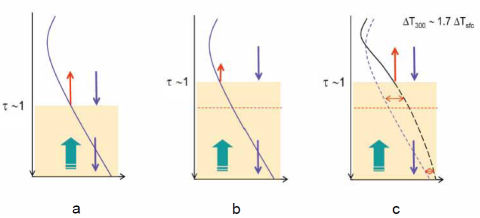

L'effet de serre remis en question par plusieurs physiciens ( rédigé en 2007- derniers ajouts le 06/01/2012)Comme je vous l'ai souvent dit, ce site vise à compléter (ou à corriger, le cas échéant) les nombreuse informations que vous assènent les grands médias et les grands prophètes du "réchauffement climatique global", le plus souvent incompétents. Pour eux, -du moins, ils le tiennent pour tel-, le débat est clos. La cause est entendue : Les traces de CO2 présentes dans l'atmosphère sont, via l'effet de serre, les grands responsables du réchauffement global. D'ailleurs c'est bénéfique, ajoutent-ils (tant que l'homme ne s'est pas ingénié à en rajouter), puisque si l'effet de serre n'existait pas, nous serions condamnés à vivre à -18°C, autrement dit, au Groenland. Les affirmations de ces cavaliers de l'apocalypse paraissent revêtues du "consensus" de la quasi-totalité des scientifiques et des médias . Alors, une fois encore, vous admettez tout cela comme un fait acquis et vous pensez certainement qu'il n'existe aucune controverse. Eh pourtant, le crédo de l'effet de serre est très sérieusement contesté par des physiciens spécialistes, théoriciens et thermodynamiciens, qui expliquent que la théorie de l'effet de serre traditionnelle ne tient pas la route, viole les lois fondamentales de la physique et que certains calculs de température qui ont conduits aux chiffres mille fois répétés, sont absolument faux... Si vous avez eu la curiosité de lire la page consacré aux théories (au pluriel) du réchauffement climatique, vous avez déjà pu constater qu'il existe, au moins, une explication alternative à celle de l'effet de serre du CO2, qui tient suffisamment la route, comme on dit vulgairement, au point qu'un important projet, doté de gros capitaux, a démarré au CERN en 2007 pour en préciser les mécanismes fondamentaux. Les articles présentés ci-dessous relèvent de la même philosophie qui est de vous expliquer que le débat n'est pas aussi entendu qu'on voudrait vous le faire croire, qu'il existe au contraire de solides arguments qui mettent en doute, cette fois-ci, les thèses actuelles voire la conception même ou l'efficacité de l'effet de serre. L'affaire est d'importance cruciale puisqu'elle touche au coeur même du problème. L'effet de serre que beaucoup (de non-physiciens) considèrent comme une évidence, existe t'il réellement ? S'il existe, est-il vraiment responsable de l'évolution des températures de notre planète et, si c'est le cas, est-il correctement modélisé ? Nous allons voir ce qu'en disent plusieurs physiciens chevronnés. Attention : Cet article est forcément un peu plus "technique" que les autres, mais il est difficile de faire autrement si on veut comprendre. Comme vous le verrez, les idées naïves et les calculs simplistes ou carrément erronés que véhiculent nombre de publications dont quelques unes ont pourtant reçues le fameux label "peer-reviewed" (acceptées par les pairs), méritent le détour.
Cette longue page est divisée en cinq parties. En voici le plan : A) Rappels du modèle de l'effet de serre traditionnel (d'après Roy Spencer) B) La théorie de l'effet de serre "saturé" de Miskolczi. C) Les critiques apportées aux formulations traditionnelles de l'effet de serre par deux théoriciens allemands Gerhard Gerlich et Ralf Tscheuschner. D) Brève introduction à la théorie de l'effet de serre adiabatique de l'école Russe. E) Quelques rappels sur le rôle des nuages et conclusion. ____________________________________________________________________________________________________
Etape 1 - Le grand principe : L'équilibre radiatif 1) Placée dans le vide inter-sidéral, la Terre ne peut recevoir de chaleur en provenance du Soleil que par le biais de radiations lumineuses : le flux solaire incident. 2) Si la Terre (ou toute autre planète) n'avait aucun moyen de se débarrasser de cette énergie incidente qui lui parvient perpétuellement du Soleil, sa température augmenterait indéfiniment... Mais en fait et heureusement pour nous, la Terre ainsi irradiée, parvient à éliminer tout ou partie de l'énergie incidente. Comment fait elle ? 3) La Terre réchauffée par les rayons solaires, émet vers tout l'espace des radiations infra-rouges comme tout corps réchauffé au dessus du zéro absolu (0K). Ce rayonnement émis vers l'espace permet à la Terre de se refroidir. 4) L'équilibre est atteint, c'est à dire que la température de la Terre reste constante quand la quantité d'énergie incidente (venant du Soleil) est égale à la quantité d'énergie perdue par rayonnement infra-rouge émis vers l'espace. Je complète le texte de Spencer en remarquant que la terre se débarrasse aussi d'une partie du flux solaire incident en le réfléchissant suivant un paramètre appelé l'Albedo. L'émission infra-rouge est, elle, caractérisée par un paramètre appelé l'émissivité. 5) Cet équilibre entre ce qui parvient sur la Terre et ce qui s'en échappe, s'appelle "l'équilibre radiatif". Notez que, dans ce schéma, et c'est la grande différence avec les idées de O. G. Sorokhtin, G. V. Chilingar et L. F. Khylyuk exposées plus bas, les échanges sont fondamentalement radiatifs et non convectifs. 6) L'introduction des "gaz à effet de serre" générés par les activités humaines est supposée affecter cet équilibre radiatif. Autrement dit, on pense que les gaz à effets de serre, générés par l'activité humaine (et même sa respiration.), empêchent la Terre de se refroidir suffisamment, ce qui conduit au réchauffement global. Nous dit-on. Vous verrez ci-dessous que cette idée est énergiquement mise à mal par la théorie de Miskolczi (2008) sans compter les objections fondamentales émises par deux autres physiciens allemands. Etape 2 - Le déséquilibre radiatif en quelques chiffres ... Question : Ainsi, nous (les hommes) sommes supposés avoir détruit l'équilibre radiatif de notre belle planète bleue en injectant inconsidérément du CO2 et d'autres GES (gaz à effet de serre) dans son atmosphère...De combien aurions nous perturbé cet équilibre ? Réponse : On estime que le taux de refroidissement (par émission d'infra-rouges) qui est normalement d'environ 235 Watt/m2 aurait été réduit d'environ 1,6 Watt/m2 par l'accumulation du CO2 anthropogénique dans l'atmosphère depuis le début de l'ère industrielle. Mais nous ne sommes plus au début de l'ère industrielle et compte tenu de l'augmentation de température déjà observée (+0,6 °C /100 ans), nous n'en sommes plus, actuellement, qu'à un déficit de 0,8 Watt/m2 que la Terre devrait rattraper en se réchauffant encore plus... disent les tenants de la théorie de l'effet de serre. Question : Sommes nous absolument certains de l'existence et de la valeur de ce déséquilibre radiatif aussi appelé "forçage radiatif" ? L'avons nous mesuré ? Réponse : Non. Les instruments actuels en orbite autour de la planète ne sont ni assez sensibles ni assez précis pour détecter de si faibles variations (je rappelle ici que Roy Spencer qui affirme cela est un spécialiste des mesures satellitaires). Ces déséquilibres radiatifs de 1,6 ou 0,8 watt/m2 résultent de calculs purement théoriques. Nous n'en avons pas la preuve expérimentale directe. Question : Quelle est (ou serait) la conséquence directe de ce "forçage radiatif" sur la planète en terme d'accroissement de température ? Réponse : Si toutes les choses restaient égales par ailleurs, c'est à dire si la Terre ne réagissait pas par l'intermédiaire de rétroactions positives ou négatives à un léger réchauffement, l'effet d'un doublement de la proportion du CO2 dans l'atmosphère (peut-être obtenu à la fin du siècle) serait très faible. La température de la planète augmenterait d'environ 0,56°C (Ou 1°F. certains disent 1,2°C). Pour avoir une idée précise de la contribution humaine, pensez que l'homme rajoute une molécule de CO2 pour 100.000 molécules d'air, tous les cinq ans. C'est une contribution minuscule. Question: Mais, alors, comment se fait-il que l'on nous promette des hausses de températures très supérieures, de l'ordre de 2 à 4°C, voire 5 ou 6°C? Réponse : Le problème c'est que, sans doute, la planète (océans, sol, végétation, biotas etc.) peut réagir à une aussi faible variation de température. Par exemple, on peut assister à une modification de l'ennuagement à basse altitude qui protège du Soleil ou, au contraire, à haute altitude qui augmente l'effet de serre. Les océans réchauffés peuvent dégazer du CO2 et enrichir encore l'atmosphère en vapeur d'eau qui est un puissant gaz à effet de serre, la végétation peut aussi réagir etc. Ces réactions de la planète peuvent s'opérer soit en essayant de contrer la montée des températures (rétroactions négatives) soit, au contraire, en l'amplifiant (rétroactions positives). Tout le problème est là. Et là aussi se trouvent les principales incertitudes des modèles climatiques qui font des prévisions, comme ceux du GIEC. Etape 3 - Les incertitudes des modèles de l'effet de serre : Tout d'abord, il n'y a pas qu'un seul modèle de l'effet de serre, mais bien plusieurs (voir, par exemple, celui de Lindzen, cité plus bas). Et ces modèles ont considérablement évolué au cours du temps. Partant de l'hypothèse d'Arrhénius (1896, voir ci-dessous) les modèles font maintenant appel aux principes fondamentaux de la théorie des radiations. Ils impliquent aussi la convection des masses d'air (et de gaz à effet de serre) dans l'atmosphère. Compte tenu des ces incertitudes et des données objectives (souvent contrariantes pour les tenants de l'effet de serre) dont nous disposons sur l'histoire du climat de la planète (voir ici), il est parfaitement sain et naturel que de nombreux scientifiques continuent à s'interroger sur l'exactitude des modèles de l'effet de serre, même si beaucoup de propagandistes prétendent que "la science a dit son dernier mot." ou que "l'affaire est réglée". Il n'en est rien, comme va vous le démontrer la discussion qui suit cette petite introduction. D'autre part, comme vous le verrez en fin de cette page, de nombreux articles paraissent, jour après jour, pour démonter telle ou telle idée fausse sur les rétroactions supposées positives et qui, en fait, s'avèrent négatives (voir ici aussi, pour un autre exemple).
|
||||||||||||||
|---|---|---|---|---|---|---|---|---|---|---|---|---|---|---|
B) La théorie "corrigée" de l'effet de serre : L'effet de serre est constamment saturé.
Ferenc Miskolczi est un physicien de l'atmosphère spécialisé dans les transferts radiatifs. Il a longtemps travaillé au sein de la NASA en tant que directeur de recherche, sur plusieurs projets de mesures à distance (remote sensing) dans l'atmosphère et sur l'évaluation du budget radiatif de la Terre. Il est intéressant de remarquer que le Professeur Zagoni qui est, maintenant, un des principaux supporters de la théorie de Miskolczi était, il y a quelques mois à peine, le plus ardent défenseur de la théorie classique du réchauffement anthropogénique en Hongrie. On peut lire cet article du 30 août 2007 dans lequel il fustige les journalistes qui doutent que la cause d'une vague de chaleur sur la Hongrie soit le réchauffement anthropogénique. C'était à peine quelques semaines avant qu'il découvre la théorie de Miskolczi et devienne instantanément sceptique sur la théorie classique de l'effet de serre...Il faut dire que cette nouvelle théorie ne manque pas d'arguments. Notamment, elle prévoit, ex nihilo, que l'effet de serre est déjà saturé et ne pourra plus augmenter et que l'atmosphère a une épaisseur optique constante (c'est à dire quel que soit l'ajout de gaz à effet de serre) de 1,84 et la valeur mesurée est de... 1,87. Cet article a fait grand bruit et n'a pas plu à tout le monde parce qu'il met à bas tout l'édifice patiemment installé par le GIEC et ses thuriféraires. Pourtant, à la différence des modèles classiques de l'effet de serre utilisé par le GIEC, le modèle analytique de Ferenc Miskolczi permet d'expliquer un certain nombre d'observations dérangeantes pour les modèles actuels, telles que l'absence de hotspot dans la troposphère, mentionné ci-dessous, entre autres. A noter aussi que le modèle de Ferenc Miskolczi (publié en 2007) n'est pas un modèle d'ordinateur de l'effet de serre dans lequel on rentre un certain nombre d'équations "plausibles" ainsi qu'un certain nombre de paramètres qui sont plus ou moins "ajustés" pour obtenir le résultat (désiré ?). Il s'agit, cette fois-ci, d'un modèle mathématique, ou plutôt, analytique basé essentiellement sur des considérations d'équilibre énergétique. Cela fait une énorme différence. 1) Dans tous les modèles en vigueur, le CO2 et la vapeur d'eau sont traités en étapes successives : Il n' y a aucune raison qu'il en soit ainsi. Les gaz à effet de serre doivent être traités "en bloc" . Un des points essentiels et qui demeure obscur (pour moi, comme pour de nombreux scientifiques) dans les modèles classiques de l'effet de serre consiste à appliquer un traitement différent pour les deux gaz à effet de serre principaux : La vapeur d'eau et le gaz carbonique CO2. En effet, pour quelle raison (scientifique, sinon politique) tous les calculs sont centrés sur le deuxième acteur de l'effet de serre : le CO2 qui se trouve être relativement mineur par rapport à l'effet exercé par la vapeur d'eau H20, beaucoup plus efficace et infiniment plus présente dans l'atmosphère ? La réponse est pratiquement invariable, même si elle n'est pas satisfaisante : On considère l'effet du CO2 car c'est lui qui piloterait l'effet de la vapeur d'eau qui ne serait donc qu'une rétroaction liée au réchauffement causé par le CO2. Autrement dit le maître est beaucoup plus petit que son grand esclave... Du point de vue des modèles d'ordinateurs GCM (Global Climate Models) on considère donc - et cela a des implications considérables- que le processus d'évolution du climat se fait par étapes, successives et séparées : Le CO2 réchauffe la planète, puis la teneur en vapeur d'eau de l'atmosphère augmente ce qui à son tour fait monter la température qui, à son tour fait augmenter le taux de vapeur d'eau de l'atmosphère augmentant encore la température etc. Comme on le voit, un tel enchaînement séquentiel ne peut que conduire à une divergence et au fameux "tipping point" (point de basculement) cher à James Hansen, à Al Gore et à leurs admirateurs... Notez au passage que ce faisant, on considère que le taux d'humidité relative reste constant pendant que la concentration du CO2 augmente. C'est la base même du processus séquentiel. Ferenc Miskolczi fait remarquer que cette procédure n'a aucun sens du point de vue de la physique de l'atmosphère et de l'équilibre des échanges Terre-atmosphère-espace. En effet, il ne peut exister d'équations d'équilibre séparées pour les différents gaz à effet de serre. Il n'existe qu'une seule équation d'équilibre (radiatif) qui implique tous les gaz à effets de serre, notre planète et l'énergie solaire, d'un seul coup. L'hypothèse (car c'en est une) des événements séquentiels ne pourrait être validée que si l'équilibre était effectivement atteint par une suite d'échelons distinguables dans le temps. Cette hypothèse n'est pas validée par les observations. Il n'y a donc aucune raison de la faire. 2) Les équations de base de l'effet de serre (sur les avatars desquelles reposent tous les modèles actuels) établies en 1922 par Milne à la suite d'Eddington (1916) sont erronées parce qu'elles sont incomplètes (dans l'article "Radiative equilibrium: The insolation of an atmosphere". Monthly notices of the Royal Astronomical Society, XXIV, 872-896). Ces équations partent de l'hypothèse d'une atmosphère semi-infinie . Elles sont incomplètes parce qu'elles ne contiennent pas les équations d'équilibre énergétique nécessaires. D'autre part, Milne avait déclaré (à tort, selon Miskolczi) que "L'hypothèse d'une épaisseur infinie n'induit qu'un perte très faible ou nulle de généralité"... Ce qui s'avère faux comme le montre le travail de Miskolczi qui lui observe que l'atmosphère est limitée, et d'autre part que le système d'échange de flux entre la Terre, l'atmosphère et l'espace extérieur obéit à des lois de conservation de l'énergie qui bouleversent totalement les conclusions. Parmi d'autres anomalies de la théorie classique de l'effet de serre, et toujours selon Miskolczi, il en est une qui pose un grave problème et qui n'est toujours pas résolue de manière satisfaisante. Nous allons la rappeler : Paradoxe de la discontinuité de température à la surface de la Terre : Ainsi, la théorie en vigueur éprouve bien des difficultés à gérer un paradoxe qui est révélateur d'un grave problème. Il s'agit de la différence, indiquée par les modèles classiquement utilisés, entre la température du sol et celle de l'air qui se trouve immédiatement en contact avec le sol. Cette discontinuité trahit, selon Miskolczi, une anomalie ou une erreur fondamentale du modèle de base qui doit être impérativement corrigée. A titre d'illustration voici une représentation du schéma et des équations actuellement utilisées par les modèles traditionnels de l'effet de serre.
Il est impossible, dans le cadre de cet exposé, de détailler la signification exacte de tous les symboles qui figurent sur cette image. Néanmoins, l'examen de la partie située en bas et à droite ( AIR et GROUND) nous montre que le résultat des calculs résultants de l'approximation de Schwarzchild-Milne, donne une température différente pour l'air situé près du sol et pour le sol lui-même. Par exemple, pour une profondeur optique ( c'est le coefficient d'absorption) de 1,84, proche de la réalité objective, la différence entre la température du sol et de l'air en contact serait de 25°C. Ce qui est évidemment totalement irréaliste. Les modèles informatiques actuels se tirent de ce mauvais pas à l'aide d'adaptations "ad-hoc" inclues dans les programmes. A l'opposé, la théorie "corrigée" de l'effet de serre avancée par Miskolczi montre que, comme il se doit, cette discontinuité irréaliste n'existe pas. En réalité le paradoxe de la discontinuité à la surface de la Terre résulte de la non application de "lois de fermeture" qui imposent des conditions aux limites qui ont été "oubliées" par les théoriciens du siècle dernier, et suivis, sans discussion, par les climatologues actuels. 3) La théorie de Miskolczi considère que l'atmosphère est limitée des deux cotés (haut et bas) et semi-transparente, et non pas semi-infinie et opaque. Il utilise la loi de Kirchhoff. Sans rentrer dans les détails, mais pour donner un simple aperçu, nous allons expliquer brièvement comment Miskolczi établit ses lois de conservation de l'énergie. Ceux qui veulent en savoir plus sont invités à se reporter aux deux sources suivantes qui abondent de détails sur la procédure employée (source1, rédigée par le Professeur Zagoni ) (source2). L'article original de Miskolczi est, évidemment, moins pédagogique que ces deux sources. Miskolczi considère que le système Terre-atmosphère n'est rien d'autre qu'un système convertisseur de flux d'énergie de courtes longueurs d'ondes ( flux de lumière visible venant du Soleil ) en flux de grandes longueurs d'onde (flux Infra rouge). L'énergie rentre dans le système sous forme de longueurs d'ondes visibles (flux FO ). Il évolue dans le système constitué par l'atmosphère (E) et la surface terrestre (S). Il ressort et s'échappe dans l'espace sous la forme d'un flux Infra Rouge (OLR). Dans la figure ci-contre SU représente le (surface up) le flux émis par la surface vers le haut. FO représente le flux rentrant total dû au Soleil. EU représente le flux montant (IR) venant de l'atmosphère et ED le flux descendant (IR) de l'atmosphère. Dans son expression la plus élémentaire, la première loi de conservation de l'énergie s'écrit donc comme suit : OLR = SU -FO + ED -EU Si on suppose que le système atmosphérique est capable d'absorber la totalité du flux rentrant (FO) pour réchauffer le système. ( FO=OLR). Cette équation peut être explicitée si on considère que l'on peut appliquer la loi de Kirchhoff aux couples (Surface-Atmosphère) et (sommet de l'atmosphère-espace). Rappelons que la loi de Kirchhoff (pour les systèmes radiants) est une loi qui concerne les échanges de chaleur (et donc d'infra-rouges). Elle stipule qu'un corps (noir ou gris) a un pouvoir absorbant égal à son pouvoir émetteur. Inutile de dire que l'application de cette loi de thermique à l'atmosphère, pose problème. Miskolczi en est parfaitement conscient et il justifie l'utilisation de cette loi à partir de mesures réelles effectuées dans l'atmosphère, comme nous le verrons ci-dessous. Si on applique la loi de Kirchhoff, on obtient les égalités suivantes : ED = SU (équilibre à la surface) EU = FO = OLR (équilibre au sommet de l'atmosphère). Ce qui, introduit dans l'équation générale précédente, donne : SU= 3/2(OLR) .
Cette équation est illustrée et justifiée ( à 4% près) par Miskolczi sur la figure ci-contre, qui résulte de mesures directes effectuées par radio-sondes. Remarquons au passage que cette loi et les mesures indiquent que le flux émis (mesures à 61km d'altitude) librement vers l'espace est de 250W/m2 tandis que le le flux émis par la Terre est de 375W/m2 . Le rapport (AR4 de 2007) du GIEC basé sur les travaux de Kiehl et Trenberth indique respectivement des valeurs de 235W/m2 et 390W/m2 . Ce qui signifie que le GIEC surestime le flux émis par la Terre (et donc sa température) et sous estime le flux qui s'échappe dans l'espace, ce qui donne une plus grande importance à l'effet de serre. Bien que faibles ces écarts ne sont pas négligeables : rappelons-nous que nous bataillons pour les rares W/m2 (de 1 à 3,7 W/m2 ) supplémentaires qui parviennent (ou pas) sur la Terre du fait de l'effet de serre... Le coefficient 3/2 qui figure dans l'équation précédente est crucial. Il fixe une valeur maximale à l'effet de serre. Cette condition est obtenue à partir de l'équation de conservation des énergies auquel le système ne peut déroger quoiqu'il arrive. Ainsi, pour avoir une idée des réactions du système à une brusque perturbation, comme par exemple l'ajout instantané de CO2 dans l'atmosphère, nous baptisons ce coefficient f. La dérivée partielle de l'équation précédente donne : df/f = d(OLR)/OLR -d(SU)/SU Un brusque ajout de CO2 dans l'atmosphère donnerait df/f >0. C'est à dire que OLR doit croître plus vite que SU autrement dit, en clair, que le flux partant dans l'espace doit croître plus vite que celui qui est émis par la Terre. Ceci entraîne une contreréaction négative qui va faire faire revenir f à sa valeur normale de 2/3 après un court délai.Ceci nécessite un abaissement d'une autre composante de l'effet de serre, par exemple celui de la vapeur d'eau (H2O) qu'il est facile d'éliminer (par exemple sous forme de pluie) pour retrouver le niveau normal de f =2/3 et donc restaurer la température de l'atmosphère et par suite, de la Terre. En clair , l'introduction de l'équation d'équilibre énergétique impose une limite à l'effet de serre que celui-ci ne peut dépasser.... et qui est déjà atteint. Ceci permet d'expliquer les échecs successifs visant à détecter le fameux hotspot ( décrit ci-dessous plus en détail) prévu par les modèles classiques comme on le voit sur le graphe ci-contre (Douglass et al) (source) qui est montré à plusieurs reprises dans ce site. Autrement dit, il semble bien que la zone troposphérique refuse de se réchauffer 3 à 4 fois plus que la Terre comme le prévoient les modèles. Le résultat des mesures (points bleus) est parfaitement conforme avec le modèle de Miskolczi. Ils sont en désaccord avec les résultats des modèles (en rouge).
Après avoir fait usage (et vérifié l'applicabilité) de la loi de Kirchhoff qui constitue une équation de "fermeture" pour l'évolution du système, Miskolczi fait intervenir le théorème du Viriel qui précise que l'énergie cinétique est égale à la moitié de l'énergie potentielle pour un système de particules en interaction gravitationnelle. L'utilisation de ce théorème implique le phénomène de convection qui fait remonter l'air chaud et descendre l'air froid (comme dans la théorie de l'effet de serre adiabatique de Sorokhtin, Chilingar et Khylyuk où la convection est prioritaire, voir ci-dessous). Dans le modèle de Miskolczi, l'atmosphère est en équilibre hydrostatique déterminé par les forces gravitationnelles. A partir de considérations impliquant la pression de radiation, l'énergie cinétique peut être assimilée au flux IR montant de l'atmosphère EU et l'énergie potentielle est assimilée au flux infra-rouge montant de la surface terrestre SU . Cette utilisation du théorème du viriel est délicate. Elle perturbe sérieusement les tenants de la théorie classique, tout comme d'ailleurs l'application de la loi de Kirchhoff.. L'utilisation du théorème du viriel permet de calculer la fraction de SU qui repart librement dans l'espace, c'est à dire celle qui n'est pas absorbée par l'atmosphère. . Les équations ultrasimplifiées rappelées ci-dessus qui permettent de comprendre comment Miskolczi a établi sa loi de conservation de l'énergie n'impliquent nulle part que l'atmosphère ne renvoie pas intégralement le flux reçu par la Terre vers l'espace. En effet, une partie est absorbée par l'atmosphère. Ceci est paramètré par l'absorption optique (ou son inverse la transmittance). Cette transmittance est déterminée par le jeu complexe des fenêtres de transmissions infra-rouges des différents gaz à effet de serre (dont Miskolczi est un spécialiste). Bien entendu, ce paramètre fondamental est introduit dans les équations complètes et c'est pour cette raison que cette théorie est qualifiée de théorie "semi-transparente" et non d'infiniment absorbante comme la théorie classique. Pour être plus complet, précisons que la théorie de Miskolczi démontre que l'atmosphère utilise le principe du minimum d'énergie. Ce faisant, elle est caractérisée par une valeur toute particulière de l'absorption optique (appelée profondeur optique égale à 1,84 sachant que la profondeur optique effectivement mesurée est égale à 1,87) qui joue un rôle absolument central dans l'évolution du système. En effet, lors de n'importe quelle perturbation du système (e.g. plus ou moins de CO2 ou de H2O introduits) le système va évoluer pour satisfaire aux équations d'équilibre afin de restaurer cette profondeur optique d'environ 1,84. Par exemple, en retirant de la vapeur d'eau de l'atmosphère pour compenser un ajout de CO2 .
Comme je l'ai fait remarquer, l'application de la loi de Kirchhoff et du théorème du Viriel à l'atmosphère sont conceptuellement délicates. Afin de vérifier la validité de ces applications, Miskolczi présente le tableau ci-contre qui rassemble les résultats de mesures par radiosondes. On constate bien que la loi de Kirchhoff semble bien s'appliquer pour l'atmosphère, de même que le théorème du Viriel ( SU =2EU). Les lois de conservation d'énergie et de d'équilibre radiatif sont également vérifiées par les mesures des radio-sondes. dont Miskolczi était un expert à la NASA.
Remarques sur l'efficacité des rétroactions climatiques (source ici): La survenue de l'évènement El Niño de l'année 1998 nous fournit une illustration directe de la manière dont réagit le système climatique à la suite d'un réchauffement intense et bref. Ceci est illustré sur le graphe ci-contre : A partir des données publiées par la World Meteorological Organisation ou de n'importe quel relevé crédible de températures tels que ceux que vous pourrez trouver dans cette page, vous pourrez observer que le réchauffement causé par El Niño a été "surcompensé" dans les années suivantes par un refroidissement (relatif) de la température qui s'est prolongé jusqu'en 2001 environ. On sait que l'El Niño très intense de 1998 a été suivi par un La Niña (froid) pendant les deux années suivantes. Il est (selon moi) assez étonnant que cet évènement, pourtant révélateur de la manière dont évolue la machine climatique n'ait, à ma connaissance, fait l'objet d'aucune étude attentive. En effet, il est assez rare que la Nature nous fournisse un sujet d'étude aussi pertinent : Une brusque et forte hausse de température liée à des phénomènes océaniques s'est produite en 1998, suivie par un refroidissement énergique nous donnant ainsi l'occasion de voir "en direct" comment le climat à réagi...En fait, c'est une véritable expérience naturelle qui s'est déroulée sous nos yeux. Il est hors de doute que ce réchauffement brutal de la surface de la planète et surtout de son océan pacifique, a expédié une grande bouffée de vapeur d'eau dans l'atmosphère. Comme chacun sait, la vapeur d'eau est un puissant gaz à effet de serre et, selon les modèles en vigueur, ce serait elle qui serait responsable des 3/4 ou des 4/5èmes du réchauffement global (par effet de rétroaction positive, supposée dans les modèles d'ordinateurs). De fait, si on rapproche le graphique des température de celui de l'occurrence des El Niño et des La Niñas, on ne voit aucune tendance à la divergence lors des réchauffements de la température. (voir cette page : les effets océaniques) 4) Illustration pédagogique : Il existe une analogie hydraulique de l'effet de serre traditionnel. On peut la modifier pour illustrer la théorie de Miskolczi. (d'après l'auteur du site) Les chercheurs pédagogues ont trouvé une analogie hydraulique de l'effet de serre. Elle est bien connue aux Etats-Unis sous le nom "the bucket analogy", l'analogie du seau. Vous en trouverez une autre explication ici. Cette analogie qui est beaucoup plus astucieuse et plus proche de la réalité des modèles que celle de la serre de jardin, (fausse comme vous le verrez ci-dessous et malheureusement popularisée par certains sites), est représentée sur la partie gauche du dessin ci-contre.
L'idée est la suivante : Vous disposez d'un seau cylindrique en plastique dans lequel vous avez percé des petits trous (disons 2mm de diamètre) équidistants suivant une génératrice verticale du cylindre, comme représenté sur le dessin. En utilisant un robinet ajustable, vous faites couler de l'eau dans le seau jusqu'à obtenir un équilibre stable à une hauteur h qui affleure en général à un trou. Ceci peut être facilement obtenu en ajustant le débit d'eau. Inutile de préciser que, comme toutes les analogies de ce genre, celle-ci est susceptible de nombreuses critiques. Ce n'est guère qu'une illustration.
Toujours en gardant à l'esprit qu'il ne s'agit de rien d'autre que d'une illustration pédagogique, on se souvient que le principe de conservation de l'énergie (et de la loi de Kirchhoff) utilisé par Miskolczi impliquent que, parvenu à un certain point, l'effet de serre (et la température) ne peuvent plus augmenter parce que toute augmentation de CO2 (par exemple) est immédiatement compensée par la disparition d'une quantité ad-hoc de vapeur d'eau dans la haute troposphère, c'est à dire à l'endroit où l'effet de serre est le plus efficace. Sur ce dernier point voir le rapport AR4 (2007) du GIEC qui précise au chapitre 8, page 632 que :" Dans de telles circonstances, pour un réchauffement uniforme, la plus grande variation fractionnelle de la vapeur d'eau et donc la plus grande contribution au feedback, se produit dans la haute troposphère"). Cet effet de rétroaction négative qui s'oppose à toute augmentation de l'effet de serre peut-être aisément simulé dans l'analogie du seau en perçant à une hauteur hmax un petit trou de plus grande surface que la somme des surface des petits trous percés auparavant. Sur mon dessin, j'ai choisi une forme triangulaire sur le dessin de manière à montrer que le niveau (la température) peut encore monter faiblement si on bouche de plus en plus en plus de petits trous (si on ajoute de plus en plus en plus de CO2). Ainsi, lorsque l'on a bouché suffisamment de petits trous (i.e. ajouté suffisamment de CO2) le niveau ( la température) est parvenu à cet étiage. Il ne peut plus monter ou très légèrement. L'effet de serre est saturé comme dans le modèle de Miskolczi. Le trou triangulaire (ou d'une forme quelconque) représente la rétroaction négative de la vapeur d'eau qui disparaît si l'effet de serre atteint sa valeur de saturation. Ceci n'est rien d'autre que l'idée du thermostat, chère à Roy Spencer (ici) . Selon ce dernier et aussi selon la théorie de Miskolczi, la pluie et les nuages (de basse altitude) constituent des rétroactions efficaces pour maintenir la température de la Terre dans des limites raisonnables... 5) Conclusion et compléments accessibles pour en savoir plus :
Dans l'analyse de cet article pour Friends of Science (source en anglais), (texte en français ici (Merci à JMR pour la traduction) ), Ken Gregory fait remarquer que la théorie de Miskolczi prévoit que les taux des gaz à effet de serre (CO2 et H2O par exemple) doivent se compenser dans la zone de l'atmosphère qui est proche de la stratosphère (où l'effet de serre est majoritaire). Ainsi et en bref, l'augmentation de CO2 continuelle mesurée par le site de mauna Loa (voir ici) devrait, selon cette théorie, s'accompagner d'une baisse continuelle de l'humidité relative. A noter que les théories classiques de l'effet de serre prévoient exactement le contraire c'est à dire que plus de CO2 entraîne plus de H2O.. C'est donc un test discriminant. Alors, voyons ce que nous disent les mesures effectives en haute atmosphère dont on trouve les résultats publiés par la NOAA. Les données de la NOAA sont reportées sur le graphique ci-contre. Rappelons que l'humidité relative est la fraction de vapeur d'eau dans un volume donné d'air relative à la quantité totale de vapeur d'eau que ce volume d'air pourrait contenir à la même température et à la même pression. Ce graphique est très parlant : En effet, alors que le taux de CO2 a continuellement augmenté dans l'atmosphère depuis 1948, l'humidité relative de l'atmosphère autour du HOTSPOT dont il est longuement question ci-dessous (c'est à dire autour de 300mb de pression soit à 9-10 km d'altitude), a nettement baissé (de l'ordre de 21,5%) pendant la même période (courbe en bleu foncé). Autrement dit, tout se passe comme si, conformément à la théorie de Miskolczi, la vapeur d'eau exerçait une rétroaction négative lors d' une augmentation du CO2. Je vous rappelle que la théorie classique prévoit, elle, une contre réaction positive... (nécessaire d'ailleurs pour son scénario de +4 ou 5°C en cent ans.) Nous allons en savoir beaucoup plus, et très bientôt sur cette question grâce à la publication prochaine des résultats des sondeurs AIRS (Atmospheric InfraRed Sounders) à bord des satellites AQUA qui vont nous donner la réponse à cette question absolument cruciale : La vapeur d'eau atmosphérique exerce-t-elle une contre réaction positive ou négative dans l'atmosphère. Si la réponse est : rétroaction négative, cela justifie le modèle de Miskolczi et porte un coup fatal aux modèles classiques du GIEC. Nous verrons, mais je crois savoir que les résultats vont en surprendre beaucoup... Pour l'instant, (le 4 août 2008) les chercheurs de l'AIRS travaillent à leur communiqué. En conclusion provisoire pour cette partie B) sur la théorie de Miskolczi, Voici un tableau résumant l'historique de l'évolution de la sensibilité climatique à un doublement du taux de CO2 dans l'atmosphère, selon les différentes théories. La sensibilité climatique est mesurée par l'élévation de température terrestre correspondant au doublement du CO2. (tiré de cette source)
Compléments pour en savoir plus : L'article original est ici (source). En pdf et en anglais. Cet article est de lecture difficile. Un résumé en anglais présenté par le physicien Miklos Zagoni à partir des diapositives présentées à diverses conférences par Miskolczi. Ce résumé nécessite la lecture de l'article complet. Une présentation simplifiée (en anglais et en 4 parties) par David Stockwell de la théorie de Miskolczi, suivie de forum de discussion. Nettement plus accessible quoique complète. (source de la partie 4 ) Une analyse en anglais de l'article de Miskolczi par Ken Gregory pour le site Friends of Science. Très accessible. (texte en français ici, merci à JMR pour la traduction) Une discussion assez approfondie sur cette théorie (en anglais). En 6 parties. Enfin, voici deux phrases extraites des articles de Stockwell et Ken Gregory qui font réfléchir : David Stockwell (source) : "L'énergie du système (surface de la Terre / atmosphère) ne peut continuellement augmenter alors que les énergies rentrantes et sortantes doivent rester identiques pour conserver le système en équilibre. Ainsi, la température de l'atmosphère doit rester à peu près constante." Le physicien Miklos Zagoni dit "Cela n'a aucun sens de s'imaginer qu'un système "attend" nos émissions de CO2 pour augmenter sa température, si par ailleurs les conditions énergétiques sont favorables au réchauffement alors que la ressource nécessaire (un réservoir pratiquement infini de gaz à effet de serre sous forme de vapeur d'eau dans les océans), est à sa disposition." (source : Ken Gregory FOS).
|
||||||||||||||
Un article explosif, est paru en fin 2007 (Ref : arXiv:0707.1161v3 du 11 septembre 2007, version V3) dans le section "atmospheric et oceanic physics" du site ArXiv (les archives) de Los Alamos (maintenant Cornell) .Cet article est intitulé " Falsification of the atmospheric CO2 greenhouse effects within the frame of physics" ( en français: "Réfutation de l'effet de serre du CO2 atmosphérique dans le cadre de la physique"). (NDLR: falsification est un faux ami). Il est signé par deux physiciens théoriciens allemands : Gehrard Gerlich et Ralf. D. Tscheuschner. Je rappelle que le site ArXiv met à la disposition des scientifiques (notamment physiciens, numériciens et biologistes) un service de pré-publication automatique des articles au moment où ils sont envoyés à une revue pour publication ultérieure après examen par des referees. Cette méthode de pré-publication accélère grandement la communication entre les scientifiques parce que les délais d'attente des rapports des arbitres sont parfois très longs. Je l'ai personnellement beaucoup utilisée comme d'ailleurs la plupart des scientifiques de ma connaissance. Ci-contre, à droite, le Professeur Dr. Gerhard Gerlich (à gauche) et le Dr. Ralf D. Tscheuschner (à droite) _____________________________________________________________________________________ Mise à jour du 18 Mars 2009 : Lors de sa parution dans le site ArXiv en sept. 2007 (non revu par les pairs, peer-reviewed) de Cornell, l'article de Gerlich et Tscheuschner a immédiatement fait l'objet de toute une série d'attaques convergentes et particulièrement acerbes de la part des affidés du GIEC. Le webmaster de ce site, qui avait "osé " expliquer que cet article posait un certain nombre de questions de physique fondamentale tout à fait pertinentes, avait lui aussi subi les foudres des "modérateurs" de certains forum dits "scientifiques" jusqu'à provoquer les fermetures immédiates des forum lorsque le site pense-unique.fr était mentionné (!) Les noms d'oiseaux volaient très bas. Bref, beaucoup des supporters de la pensee-unique en matière d'effet de serre affirmaient que cet article était faux et qu'en conséquence, il ne serait jamais accepté dans la littérature scientifique peer-reviewée et qu"'il était idiot (voire pire) d'en faire l'apologie". Ce qui n'était pas le cas. Outre le fait que le wabmaster de ce site n'a jamais fait l'apologie de quoique que ce soit mais a rapporté sur des articles publiés dans la littérature, ils avaient tort. En effet, l'article de Gehrard Gerlich et Ralf. D. Tscheuschner, soi-disant impubliable, a été accepté et publié en tant qu'article de Review (ce qui est prestigieux), dans une collection qui figure parmi les bonnes revues des physiciens : L'International Journal of Modern Physics qui relève de World Scientific. Cette revue a publié les travaux de nombreux prix Nobel de physique. (source).
Comme on le voit, l'article publié dans l'IJMPB qui ne diffère que de très peu de l'article original publié sur ArXiv en 2007, a suivi un long processus d'examen (presqu'un an et demi) ce qui n'est pas étonnant étant donné lé caractère explosif du contenu de cette publication. On peut en déduire que les referees ont dû être nombreux et ont amplement discuté avant d'être convaincus et de donner le feu vert...surtout s'agissant d'un article de revue qui est la forme la plus aboutie d'un article scientifique. Le feu vert donné à la publication de cet article, si controversé, montre qu'il existe de nombreux et très bons physiciens qui se posent encore des questions surc les modèles utilisés par les climatologues. A noter qu'un résumé de cet article, sous le titre " Equilibre thermique de la Terre et l'effet de serre" a été publié en 2008 dans un livre de la collection Springer Praxis Book intitulé : " Attribution du changement climatique : Températures, Radiation solaire et Equilibre thermique" (auteur Donald Rapp) (source : merci à Marot de le m'avoir signalé) _______________________________________________________________________________________________________________________ L'article de Gerlich et Tscheuschner, qui sont tous les deux des physiciens théoriciens, enseignants et chercheurs expérimentés, concerne donc la physique sous-jacente au fameux effet de serre qui, nous dit-on, résulterait du CO2 naturel auquel s'ajoute celui que l'homme s'ingénie à propulser dans notre atmosphère. Cet "effet de serre" comme l'on dit (et l'on verra ci-dessous que cette appellation est inadaptée), serait, dit-on toujours, le grand responsable de l'élévation de température ( +0,7°C en 100 ans) que nous connaissons actuellement et sera aussi et probablement à l'origine de la destruction de la vie sur la Terre selon d'autres, comme James Lovelock (encore que ce dernier ait changé d'avis récemment puisqu'il vient de proposer une solution...voir ici). L'effet de serre dû au CO2 est le cheval de bataille N°1 du bureau (que je prends bien soin de distinguer des experts qui ne sont pas tous d'accord, loin de là) du GIEC, ainsi que la base des discours apocalyptiques d'Al Gore et des prévisions économiques catastrophiques de Sir Stern. Sans compter, en France, les descriptions alarmistes des Nicolas Hulot et autre apôtres du zéro carbone comme Yann Arthus Bertrand et beaucoup d'autres écologistes...De fait "l'effet de serre dû au CO2 de l'atmosphère" est le seul candidat que le GIEC et consorts ont bien voulu considérer, à priori, comme le seul et unique responsable du réchauffement climatique "global" comme ils le nomment. Compte tenu du règne quasi-dictatorial de la pensée unique dans ce domaine, il faut être très sûr de soi pour oser attaquer l'effet de serre, comme par exemple, Khabiboullo Abdoussamatov qui était le chef du Laboratoire d'études spatiales de l'Observatoire principal (de Poulkovo) de l'Académie des sciences russe et directeur du projet d'Astrométrie de la Station Spatiale Internationale pour la Russie. Et pourtant, lorsque l'on examine la littérature sur ce sujet en se disant qu'elle doit être solide et inattaquable, on va de surprises en surprises. Comme vous allez le voir, toute cette théorie de l'effet de serre du CO2 que l'on vous présente comme indiscutable et qui est soi-disant soutenue par des milliers de scientifiques repose les plus souvent sur des arguments parfois fragiles du point de vue scientifique. Quelqu'en soit l'enjeu, un site comme celui-ci se devait aussi de s'interroger sur l'existence réelle de ce fameux effet de serre et surtout sur ses véritables fondements scientifiques. Car il s'agit bien là d'un problème de physique fondamentale dont beaucoup de monde affirme que le mécanisme est parfaitement compris et démontré...Comme c'est souvent le cas, les choses sont admises comme telles et rarement examinées dans le fond. Et, le temps passant, cela devient vite une certitude...De fait, L'histoire des sciences est très riche de nombreuses "bourdes" qui ont perduré, parfois pendant des dizaines d'années, avant d'être débusquées par des esprits critiques et clairvoyants qui ont, le plus souvent, éprouvé les plus grandes difficultés à de faire entendre. (Voir ici). Cette "certitude" des grands médias et du grand public repose fondamentalement sur une analogie (fausse) généreusement propagée que je vais me faire un plaisir de démonter pour vous. D'autre part, comme l'affirment G. Gerlich et R.D. Tscheuschner, il n'existe, à ce jour, aucune démonstration scientifique de la réalité de "l'effet de serre du CO2 dans l'atmosphère", qui parte des lois fondamentales de la physique, dans toute la littérature scientifique internationale. D'ailleurs, s'il y en avait une, bien vérifiée, la cause serait entendue et je ne me serais sûrement pas donné le mal d'écrire tout le contenu de ce site. Tout d'abord, Gerlich et Tscheuschner énonce un petit point d'histoire pour vous rappeler comment "l'effet de serre du CO2" dans l'atmosphère est revenu sur le devant de la scène, après avoir connu des fortunes diverses...Nous verrons ensuite que l'analogie fondamentale qui sert de base à tous les discours des tenants plus ou moins médiatiques de l'effet de serre (mais heureusement pas des modélisateurs qui savent parfaitement ce qu'il en est), est définitivement et totalement fausse. Cela a été remarqué et démontré depuis bien longtemps (dès 1909), rappelé à plusieurs reprises dans la littérature, mais résolument passé sous silence depuis lors. Gerlich et Tscheuschner discutent ensuite, avec quelques détails, des hypothèses qui sous-tendent les "extrapolations" des tenants de l'effet de serre et montrent que certaines hypothèses de base sont hasardeuses Nous noterons aussi que, toujours selon Gerlich et Tscheuschner, le fameux réchauffement de +33°C dont bénéficierait la planète du fait de l'effet de serre naturel, résulterait d'un calcul erroné dont le manque de rigueur laisse rêveur un physicien consciencieux mais qui, apparemment, ne trouble pas le sommeil de certains apprentis experts en climatologie. Heureusement, un climatologue professionnel, Roger Pielke Sr (voir ci-dessous) vient, au mois de Janvier 2008, de publier un article dénonçant aussi ces erreurs, Enfin, Gerlich et Tscheuschner.démontent l'usage abusif qui est fait des fameux petits diagrammes appelés "bilans radiatifs" de même que l'utilisation , selon eux, abusive des lois fondamentales de la physique, telle que celle de Stefan-Boltzman. 1) Petite histoire de la théorie de l'effet de serre du CO2 atmosphérique : Svante Arrhénius (1859-1927) a été un chimiste remarquable. On lui doit une loi qui porte son nom sur la dissociation électrolytique. Il a été couronné du prix Nobel dans cette discipline. En outre, il est le premier a avoir calculé (en 1896) la contribution que le CO2 présent dans l'atmosphère terrestre pouvait apporter au réchauffement de notre planète. Arrhénius comparait l'atmosphère contenant du CO2 (et bien d'autres gaz à effet de serre comme la vapeur d'eau, le méthane etc.) aux vitres d'une serre de jardin. Ce faisant, il se réfère au travail de pionnier qu'a publié en 1824, un éminent physicien thermodynamicien français, Joseph Fourier, en lui attribuant, à tort, cette analogie avec les verres des serres de jardin que Fourier (en bon thermodynamicien, sans doute), n'avait, lui, jamais évoquée. John Tyndall (1820-1893), lui, avait démontré, entre autres, que certains gaz absorbaient les rayons infra-rouges. On lui doit aussi l'explication de la couleur bleue du ciel. Tyndall avait pensé, avant Arrhénius, à un mécanisme d'effet de serre (mais sans parler de serre de jardin) qui pouvait provenir de l'absorption des rayons infra rouges par la vapeur d'eau (et non le CO2), ce qui devait réchauffer notre planète. On le voit : tout se tient...A noter, à ce propos, qu'il est utile de relire les articles fondamentaux de ces trois chercheurs, ce que, sans doute, peu de nos contemporains adeptes de l'effet de serre, ont fait. Gerlich et Tscheuschner donnent dans leur pre-print une copie de la première page de chacune de ces publications ce qui prouve que, eux , au moins, les ont lus. Ils donnent aussi le fac-similé d'une page de l'article ultérieur (1906) d'Arréhnius dans lequel celui-ci explique comment il utilise la (toute nouvelle à l'époque) loi de Stefan-Boltzmann (reliant la température de l 'émetteur à l'émission de rayonnement infra-rouge) pour calculer par un raccourci un peu naïf, que n'oserait heureusement plus faire un étudiant diplômé, l'effet sur les températures d'une réduction du CO2 de l'atmosphère. Mais revenons à cette fameuse analogie si prisée par Svante Arrhénius (et non pas par Tyndall, ni Fourier) qui assimilait le CO2 de l'atmosphère aux vitres d'une serre de jardin, ce qui a donné le nom abusif "d'effet de serre" maintenant universellement utilisé par les médias, les politiques, les écologistes (qui ne savent pas toujours de quoi ils parlent) et, hélas aussi, un certain nombre de scientifiques non avertis. 2) Le vrai mécanisme de l'effet de serre d'une serre de jardin : Tout le monde sait qu'une serre de jardin permet de faire pousser des plantes exotiques ou des plantules fragiles même par temps froid. Les jardiniers amateurs ou professionnels les utilisent à petite ou à grande échelle pour obtenir des végétaux ou des fleurs, hors saison. C'est bien évidemment parce que la température intérieure d'une serre est invariablement plus élevée que celle de l'air extérieur à cause du rayonnement solaire. L'expérience du brave Mr de Saussure qui avait tant impressionné Svante Arrhénius, ne faisait rien d'autre que de mettre en évidence et de mesurer ce que tout le monde sait de nos jours. Le montage est bibliquement simple tout comme l'était celui, un peu différent, de Mr de Saussure. Une boite, dont la partie externe est protégée des rayons du Soleil est équipée d'une fenêtre en verre ordinaire. Cette fenêtre reçoit par l'intermédiaire d'un miroir convenablement incliné, les rayons du Soleil que l'on peut, comme l'a fait Mr Wood en 1909 (voir plus loin), faire auparavant passer à travers une vitre en verre ordinaire. Ceci afin de débarrasser le rayonnement solaire des rayonnements solaires infra rouge et ultra-violets avant qu'il ne pénètrent dans la boite à travers la vitre. Qu'observe t-on ? Comme on s'y attend, un thermomètre placé à l'intérieur de la boite indique que la température de l'air contenu à l'intérieur s'élève et atteint une température bien supérieure à celle de l'air extérieur. Sur mon petit dessin, on atteint facilement 61°C, alors que la température extérieure peut être, par exemple, de 20°C. Tout cela est bien connu.On sait aussi que si la partie externe de la boite constituant la serre était bien isolée du point de vue thermique et l'intérieur peint en noir, on pourrait presque y faire cuire des oeufs (!). On en déduit évidemment et à juste titre que le rayonnement solaire a réchauffé le gaz contenu à l'intérieur de la serre. Mais la bonne question est, non moins évidemment : Par quel processus ? Voici le raisonnement de Svante Arrhénius extrapolé au CO2 de l'atmosphère de notre planète. Ce raisonnement, complètement faux, au moins pour ce qui concerne la serre de jardin de Mr de Saussure et d'Arrhénius , est d'ailleurs repris allègrement et sans sourciller, par la quasi totalité des thuriféraires de l'effet de serre anthropogénique (comme le très connu site manicore) qui ne manquent jamais de se servir de la fameuse analogie avec la serre de jardin (comme je l'ai fait moi-même ici pour des raisons pédagogiques et pour reproduire le discours ambiant ...mais en prenant des précautions oratoires indispensables) pour expliquer aux débutantscomment fonctionne l'effet de serre du CO2 atmosphérique. Voici leur raisonnement ( faux.) qui était d'ailleurs celui d'Arrhénius auquel certains zélateurs de l'effet de serre du CO2 font aveuglément confiance. A tort. Le raisonnement d'Arrhénius et de beaucoup d'autres:
NDLR : Rien à dire. Tout ce qui précède est parfaitement exact.. Mais cela va se gâter ...Que devient ce rayonnement infra-rouge généré par les objets et les parois réchauffées de la serre ? Je continue le raisonnement standard (et faux pour une serre de jardin) :
Cependant, Je vous ai dit que ce raisonnement concernant la serre de jardin était complètement erroné.
La partie gauche de ce schéma ne fait rien d'autre que de reproduire l'expérience de De Saussure qui utilisait une fenêtre en verre ordinaire qui était censée émettre des infra rouges réchauffant l'intérieur de la boite, selon Arrhénius. Robert W. Wood eut alors une idée lumineuse : Puisque le verre à vitre est censé jouer un rôle crucial en bloquant les infra-rouges dans cette expérience, il suffit de remplacer cette fenêtre par une vitre en matériau parfaitement transparent à ces rayons. Du temps de R. Wood, un matériau appelé "halite" était bien connu pour être transparent aux infra rouges comme d'ailleurs aux ultraviolets. Ayant substitué la fenêtre en verre ordinaire par une fenêtre en halite (qui n'est rien d'autre que du NaCl, (dessin de droite)) R. Wood observa que la température dans la boite s'élevait, à très peu près, de la même quantité qu'elle le faisait avec le verre à vitre opaque aux infra rouges. CQFD. R. Wood prit aussi soin de bloquer les ultra violets incidents et contenus dans la lumière du Soleil par un verre à vitre placé, bien sûr, loin devant la boite. Autrement dit avec ou sans verre à vitre, le réchauffement est le même. Ce n'est donc pas l'effet de piégeage des infra rouges par le verre de vitre ordinaire qui est responsable du réchauffement de la serre. C'est un autre mécanisme. Lequel ? Pour expliquer ceci simplement, il faut se souvenir de nos cours de physique élémentaire qui nous disaient que la chaleur peut être propagée par quatre mécanismes différents qui bénéficient tous les quatre d'équations maîtresses fondamentales :
Alors que se passe t'il dans la serre, en réalité ? Une petite "manip" censée prouver l'effet de serre, mais qui ne le fait pas (de l'auteur du site). On ne se contente pas -et c'est déjà beaucoup trop- de faire visionner à nos enfants le fameux film d'Al Gore (qui est d'ailleurs truffé d'erreurs scientifiques : Il confond allègrement réflexion avec absorption et ré-émission, tropopause avec ionosphère, micro-ondes avec ondes courtes etc...voir ici). On leur fait parfois faire des expériences censées "prouver" l'effet de serre. Comme je viens de vous le dire, aucune ne fonctionne, bien entendu, mais on fait comme si, devant de jeunes auditeurs peu informés. En voici une, très populaire (hélas) et très facile à réaliser que je me fais un plaisir de démonter pour vous. Il est d'ailleurs curieux qu'on leur montre cette expérience alors que comme chacun sait l'expérimentation réelle a pratiquement disparu de tous les cursus scolaires. Et c'est très dommage. On prend deux vases en plastique qui laisse passer les rayons infrarouges (le même plastique que celui qui est placé devant les cellules des détecteurs de mouvement que l'on trouve dans le commerce). Ces deux vases équipés de bouchons et de thermomètres, contiennent l'un de l'azote pur (ou de l'air) et l'autre de l'air ou de l'azote auquel on ajouté du gaz carbonique CO2. On place le tout au Soleil et on regarde les thermomètres. Bien entendu, comme vous vous en doutez, celui qui contient du CO2 va indiquer une température supérieure au premier qui n'en contient pas.
Comme vous l'avez deviné, cette expérience ne démontre nullement que l'effet de serre existe mais (si elle marche) elle démontre tout simplement que le gaz carbonique absorbe les rayons infrarouges, ce que nous savons depuis Tyndall. D'ailleurs, le verre à vitre de la serre de de Saussure absorbe également les infraouges mais cela ne démontre pas la réalité de l'effet de serre (atmosphérique) comme je vous l'ai expliqué ci-dessus.
De fait, comme vous le savez , l'effet de serre ne se contente pas d'utiliser la fait que le CO2 absorbe les rayons infra rouges, ce que tout le monde sait depuis longtemps. Selon les modèles élémentaires, l'effet de serre exige que le CO2 réchauffé, réemette à son tour un rayonnement infrarouge (c'est le fameux forçage radiatif qui est censé réchauffer la planète), ce que, évidemment, cette expérience "allégée" ne démontre absolument pas. Même si la physique fondamentale nous apprend que la fiole de droite émet un rayonnement infrarouge (tout comme celle de gauche d'ailleurs.), cette expérience ne le prouve pas. C'est pourtant ce qu'il faudrait démontrer... Désolé pour les apprentis pédagogues... A ce propos encore, voici, une image scandaleusement erronée, parmi une infinité d'autres et qui sont destinées à l'enseignement et au grand public. Cette image viole les principes fondamentaux de la physique, tout comme Al Gore qui confond réflexion et absorption-émission dans son fameux "une vérité qui dérange". Et c'est vrai que de telles erreurs dérangent. Cette image erronée qu'hélas beaucoup absorbent sans réfléchir (sans jeu de mots.), indique qu'une partie de la chaleur émise par la Terre est réfléchie ("heat reflected" est-il écrit en anglais) par les gaz à effet de serre. C'est totalement faux et ferait hurler même les climatologues scientifiques promoteurs de l'effet de serre. Or, ni les molécules de CO2, ni celles de CH4, d'ozone ou autres gaz sont capables de "réfléchir" la chaleur, non plus que les rayons infra rouges. Le processus qui est invoqué par les scientifiques dans l'effet de serre n'a rien à voir avec les lois de l'optique géométrique! Les molécules n'agissent pas comme des miroirs. Il s'agit, au contraire, d'une absorption ( la lumière est mangée, absorbée), suivie d'une émission d'infrarouges, à plus grande longueur d'onde. C'est un processus totalement différent de la réflexion. Le processus de l'effet de serre fait intervenir les bandes d'absorption des différentes molécules à différentes longueurs d'onde et non pas la réflexion. Et cette différence n'est pas anodine, loin de là. Elle est fondamentale pour comprendre vraiment ce qu'est l'effet de serre. En bref, la réflexion fait appel à l'optique géométrique alors que les processus d'absorption et d'émission font appel à la spectroscopie et à la thermodynamique qui sont des sciences très différentes de l'optique géométrique. Addendum mars 2010 : Le CEA propose une série d'expériences filmées par et pour les enfants. Parmi celles-ci, il y en a une qui est censée démontrer l'effet de serre aux enfants. Et cette expérience est baptisée "Expérience : Climat". Ce qui est une tromperie pure et simple vis à vis de nos enfants. En effet, le petit film montre bien l'effet de serre ... de jardin. Mais les auteurs de cette farce digne de quelques blogs, n'ont pas dû lire Woods ni la démonstration de Lee en 1973 (R. Lee, The `greenhouse effect. J. Appl. Meteor. 12, 556-557 (1973)) qui explique fort bien pourquoi et comment l'effet de serre atmosphérique n'a rien à voir avec l'effet de serre de jardin. Lee ajoute que "effet de serre" est un "misnomer". Une appellation malencontreuse. Revenons à notre petite expérience de R. W. Wood et ne soyons pas mauvais joueur! Beaucoup de physiciens consciencieux et avertis, soucieux de l'avenir thermique de la planète ont essayé de concocter des expériences qui doivent (pensaient-ils) mettre en évidence le fameux effet de serre dû au piégeage des infra rouges qui sont censés déterminer la température de notre planète. Ces expériences fournissent d'ailleurs un excellent sujet de réflexion pour nos jeunes étudiants et c'est dans le cadre de simples travaux pratiques que ces expériences ont été reproduites, avec de grandes précautions.. mais sans aucun succès. En résumé, pour pouvoir mettre en évidence le rôle piégeant et émetteur des vitres vis à vis des rayons infra rouges dans une expérience réelle, il faudrait prendre de telles précautions et notamment parvenir à supprimer totalement la convection naturelle, que cela devient pratiquement impossible. Autrement dit, il est extrêmement difficile sinon impossible, du fait de la convection naturelle et inévitable, de monter une expérience d'effet de serre avec du verre à vitre (et à fortiori avec du CO2) qui met en évidence le fameux effet de piégeage des rayons infra rouges et du forçage radiatif qui sont à la base des modèles sur le réchauffement de la planète par le CO2. En conclusion, il n'existe, à ce jour, aucune expérience réelle qui met en évidence l'effet de serre du CO2. Pas plus d'ailleurs que celui du verre à vitre de la serre de jardin. Ce que certains prétendent c'est que cet effet est démontré par ses conséquences. Encore faudrait-il être capable de démontrer que telle ou telle conséquence observée est spécifique de l'effet de serre. Ce qui n'est pas le cas... "It is therefore necessary to pay attention to trapped radiation in deducing the temperature of the planet as affected by the atmosphere.The solar rays penetrate the atmosphere, warms the ground which in turns warms the atmosphere by contact et convection currents. The heat received is thus stored up in the atmosphere remaining there on account of the very low radiating power of a gas. It seems to me very doubtful if the atmosphere is warmed to any great extent by absorbing radiation from the ground, even under the most favorable conditions" En français : Voici qu'a écrit Robert William Wood : "Il en résulte qu'il est nécessaire d'être précautionneux quant au piégeage du rayonnement (NDLR : infra rouge) en concluant que la température de la Terre est affectée par l'atmosphère. Les rayons solaires traversent l'atmosphère, réchauffent le sol qui, à son tour, réchauffe l'atmosphère par contact et courants de convection. La chaleur ainsi reçue est stoquée dans l'atmosphère et y reste à cause du très faible pouvoir radiatif des gaz. Il me semble très douteux que l'atmosphère puisse se réchauffer notablement en absorbant les radiations (NDLR: infra rouges) émises par les sol, même dans les situations les plus favorables." On en saurait mieux dire qu'on ne croit pas à l'effet de serre dû au CO2. Et provenant de celui qui avait déjà mis en défaut Arrhénius et ses adorateurs, cela mérite d'être entendu. Mais peu importe. Personne de nos jours ne relit plus les sages déclarations du bon physicien R. W. Wood. On n'entend plus parler que des idées du chimiste Arrhénius, grâce à G. S. Callendar, à C. D. Keeling, à J. Hansen, à Al Gore et aux experts du GIEC. Et de fait, l'explication moderne et rationnelle de l'effet de serre qui a, peu à peu, fait son chemin dans la littérature, est très éloignée des idées initiales d'Arrhénius et de l'effet de serrre de jardin propagée dans les médias et dans la blogosphère et hélas, par quelques scientifiques. C'est Richard Lindzen, un physicien climatologue du MIT, qui nous en donnera la description la plus crédible. Nous venons de démontrer que le mécanisme de réchauffement d'une serre ordinaire n'a rien a voir avec le fameux "forçage radiatif" que les experts du GIEC pensent être à l'origine du réchauffement de la planète.. Pour cela, certains (mais pas tous, heureusement) échafaudent des mécanismes dans lesquels le CO2 présent dans l'atmosphère joue le rôle du verre à vitre ordinaire qui est censé absorber puis émettre des rayons infra-rouges responsables du forçage radiatif.... qui ne joue pratiquement aucun rôle dans la réalité d'une serre de jardin, comme nous venons de le montrer...Mais leur raisonnement est-il au moins conforme avec ce que nous savons des transferts des flux de chaleur tels que nous les enseigne la thermodynamique fondamentale ? 3) L'effet de serre du CO2 atmosphérique et la thermodynamique, selon Gerlich et Tscheuschner : Rudolf Clausius a énoncé, en 1850, les deux lois fondamentales de la thermodynamique qui régissent la totalité des échanges de chaleur et de travail en physique. Ces deux lois qui trouvent leur origine dans les travaux de Clapeyron (1834) ont été confirmées, généralisées et reformulées sous des formes diverses par Lord Kelvin, Ludwig Boltzmann en 1873 puis par Max Planck, tout au long du XIXe siècle et au-delà. Elles n'ont jamais été démenties. La première de ces lois qui définit l'équivalent mécanique de la calorie n'est pas concernée par notre propos. Il est par contre fondamental de rappeler la seconde de ces lois (ou principes) pour l'impliquer dans le fameux "effet de serre" dû au CO2 de l'atmosphère et vérifier si les modèles de réchauffement de la planète par le CO2 popularisé à l'envi, sont bien conformes avec cette loi fondamentale de la thermodynamique.Gerlich et Tscheuschner citent une bonne quinzaine de définitions de l'effet de serre atmosphérique que l'on peut trouver dans les articles, les encyclopédies, les rapports officiels etc. et qui contredisent les principes de la thermodynamique dont la plus importante, en l'occurrence est la suivante. La voici, dans son expression la plus élémentaire (mais exacte, bien sûr). Deuxième principe de la thermodynamique : "La chaleur ne peut s'écouler d'un corps froid vers un corps chaud. Un transfert de chaleur d'un corps froid vers un corps chaud ne peut intervenir qu'avec une compensation" Cette expression simplifiée de la seconde loi (ou principe) fondamental de la thermodynamique ne dit rien d'autre que ce que nous savons tous, qui est que l'entropie (ou le désordre), dans toute évolution thermodynamique, augmente constamment. L'entropie ne régresse jamais, du moins à notre échelle humaine et évidemment à plus grande échelle. A échelle microscopique ou en nanotechnologie, c'est peut être une autre affaire comme vient de le proposer un article récent. A noter que toute violation de la seconde loi de la thermodynamique, c'est à dire prétendre que la chaleur peut s'écouler d'un corps froid vers un corps chaud, en l'absence de toute compensation (par exemple du travail mécanique comme dans un réfrigérateur), externe, équivaut à invoquer un "mouvement perpétuel de seconde espèce".Et nous savons tous que le mouvement perpétuel n'existe pas. Bref, vous l'avez compris : En toute circonstance, comme l'eau choisit toujours de descendre une pente et trouve toujours pour cela le chemin qui convient, la chaleur (et non pas l'énergie, comme beaucoup, même parmi les plus éminents climatologues, s'obstinent à confondre) va toujours d'un point chaud vers un point froid. Jamais l'inverse. Et ceci sans aucun exception ( s'il n'y a pas de travail ajouté), quel que soit le mode de transmission de la chaleur, par conduction, convection ou radiation, comme l'a soigneusement vérifié Rudolf Clausius. Nier ce principe revient à prétendre réchauffer une pièce chaude avec un radiateur froid. En fait, c'est la chaleur de la pièce qui réchauffera le radiateur. Tout le monde sait cela. Alors en quoi ce second principe de la thermodynamique concerne-t-il le fameux effet de serre du CO2 atmosphérique ? Pour le comprendre nous allons nous appuyer sur le petit dessin suivant : Ce petit dessin représente notre Terre entourée de son atmosphère. Nous savons tous que la température de l'atmosphère diminue considérablement avec l'altitude. Ainsi les voyageurs transatlantiques qui croisent, en avion, à quelques 10km d'altitude ont sans doute remarqué que le thermomètre de bord indique une température extérieure de typiquement -56°C. Il fait très, très froid dehors dans l'atmosphère. La seconde loi de la thermodynamique nous enseigne qu'il est impossible à un corps (froid) porté à -40°C de réchauffer, de quelque façon que ce soit et même par radiations infra rouges, un objet (chaud) qui est porté à +15°C. Pour être précis, c'est, toujours selon la thermodynamique, la Terre qui réchaufferait plutôt le CO2 dans l'atmosphère en lui envoyant son rayonnement infra rouge comme cela se perçoit très bien lors des nuits très claires. La Terre se refroidit. Ce trajet de la chaleur Terre->gaz carbonique est d'ailleurs admis par tout le monde. Par contre le trajet de la chaleur CO2->Terre est pour le moins problématique parce qu'il est totalement interdit par la seconde loi de la thermodynamique. Et de fait, la description correcte de l'effet de serre atmosphérique évite cet écueil. _______________________________________________________________________________________________________________________ Radiations et thermodynamique (de l'auteur du site) Comme Clausius l'a démontré dès 1850 (voir ci-dessous), le second principe s'applique aussi bien aux échanges de chaleurs portés par les radiations infra-rouges que pour les autres modes de transmission. Malheureusement, peu de gens sont familiers avec ces notions délicates d'irradiation et nombreuses sont les inepties qui sont propagées sur ce sujet et notamment sur le WEB. Considérons une petite boîte étanche contenant de l'eau froide (par exemple à 5°C) placée à quelque distance d'une boîte étanche contenant de l'eau chaude (par exemple à 80°C). Les deux boîtes sont placés dans le vide pour éviter tout transfert de chaleur (tels que convection, contact etc.) autre que purement radiatif. "La boîte d'eau froide, comme tout corps qui est porté à une température supérieure au zéro absolu (ou comme le CO2 dans l'atmosphère) émet un rayonnement infra-rouge. Une partie de ce rayonnement IR , émis dans tout l'espace, vient frapper la boîte contenant de l'eau chaude. Cette boîte chaude absorbe les rayons IR émis par la boîte froide et donc, se réchauffe. Donc la température de la boîte chaude (ou de la Terre dans le cas de l'atmosphère) va encore augmenter puisqu'elle a reçu des rayons infra-rouges. Le raisonnement semble correct... sauf que la conclusion est fausse parce que le raisonnement est abusivement tronqué et que la thermodynamique ne fonctionne pas comme cela. Il ne faut pas arrêter le raisonnement en si bon chemin. Voici la suite du raisonnement, correct, cette fois-ci : "Ayant reçu des rayons IR de la part de la boîte froide, la boîte chaude va émettre, elle-même, encore plus (si j'ose dire) d'infra-rouges en retour vers la boîte froide (alors qu'elle en émettait déjà, bien sûr) et en plus grande quantité que ceux émis par la boîte froide parce qu'elle était plus chaude. Ainsi, elle va se refroidir et la boîte froide, elle, va se réchauffer." Le bilan total c'est que la boîte chaude (la Terre) va réchauffer la boîte froide ( le CO2) et non pas l'inverse." Je ne vous cache pas que ce récit séquencé des différentes radiations émises par la boîte froide et la boîte chaude est incorrect du point de vue de la thermodynamique, car, en fait, il s'agit d'un équilibre atteint par incréments infinitésimaux, extrêmement rapides, à la vitesse de la lumière, et non pas par un processus en plusieurs étapes distinctes comme je le décris ci-dessus. C'est d'ailleurs fondamentalement la même difficulté que l'on rencontre pour les fameux "bilans radiatifs" discutés ci-dessous. Mais, la chose qui est absolument certaine, c'est que le bilan des différents radiations émises l'une vers l'autre, par la boîte froide et la boîte chaude iront forcément dans le sens de la seconde loi de la thermodynamique. C'est à dire que la boîte chaude va se refroidir et réchauffer la boîte froide, et pas l'inverse. Encore une fois, prétendre le contraire, c'est affirmer que l'entropie diminue, que l'ordre s'installe (!), que l'eau remonte une pente inclinée, que les objets les plus lourds remontent dans le vide... Bref, que l'on sait fabriquer de l'énergie (calorique, dans le cas présent) sans fournir de travail. C'est créer un mouvement perpétuel. C'est absurde. _______________________________________________________________________________________________________________________ Mise à jour du 21 Avril 2009 : Malheureusement, il semble que le raisonnement ci-dessus n'ait pas effleuré l'esprit de l'immense majorité des auteurs qui ont tenté d'expliquer à leurs contemporains le fonctionnement de l'effet de serre atmosphérique. Une liste (non exhaustive) de nombreuses déclarations ou écrits qui évoquent la "ré-emission" d'infra-rouges (quand ce n'est pas carrément "réflexion" ce qui est encore pire) issus de l'atmosphère (à -40°C) qui, selon eux, réchaufferaient la planète (à 15°C) en a été dressée, entre autres, ici. Vous y trouverez les explications de l'effet de serre vu par un grand nombre d'institutions (universités, encyclopédies diverses, ONG, GIEC, BBC, départements gouvernementaux etc.). Vous y retrouverez le mot " re-radiation" ou "back-radiation" à de multiples reprises, quand il ne s'agit pas d'une simple mention de la pseudo-analogie avec les serres de jardin. Chez nous, en France, de nombreux sites pseudo-scientifiques et de nombreux blogueurs "experts auto-proclamés" continuent de propager cette idée fausse qui, soi-disant, partant d'un corps froid ( l'atmosphère) réchaufferait un corps plus chaud (la Terre ) alors que tout au plus un corps froid ne pourrait que ralentir l'échange de chaleur qui se produit toujours dans le sens precrit par Clausius. D'autre part, certains affirment que le second principe de la thermodynamique s'applique bien aux échanges entre deux corps, par contact ou par convection mais certainement pas aux transferts radiatifs, comme nous en verrons un exemple ci-dessous. Alors, le second principe de la thermodynamique s'applique-t-il aux échanges radiatifs, oui ou non ? Je vous dis tout de suite que la réponse est OUI, ce qui va manifestement à l'encontre de la croyance de beaucoup de non physiciens. Pour ce faire, j'ai décidé de remonter aux sources fondamentales qui traitent de cette question. Parmi, celles-ci, il en est une que l'on aurait certainement du mal à démentir. En effet, il ne s'agit de rien moins que des écrits de Rudolf Clausius (1822-1888) lui-même, un des plus grands (sinon le plus grand) fondateurs de la thermodynamique et l'inventeur de l'Entropie (qu'il a d'ailleurs baptisée lui-même). C'est Clausius qui a formulé correctement et de manière définitive (jusqu'à nos jours, du moins) les deux premiers principes de la thermodynamique. (voir wikipedia en anglais qui est bien meilleur que le wiki français, très incomplet sur ce sujet). Je vous donne ci-dessous les copies de trois pages de son ouvrage qui est demeuré la "Bible" des thermodynamiciens qui, à ma connaissance, n'est toujours pas sérieusement contestée. Cet ouvrage de référence est intitulé " The Mechanical Theory of Heat " en anglais (traduit de l'allemand par Walter Browne de Cambridge). L'édition originale de ce livre est très coûteuse et difficile à trouver. Heureusement, de nombreux fac-similés ont été édités depuis la parution de la dernière version (en 1879). Les extraits suivants sont tirés de l'introduction et la conclusion du chapitre XII intitulé "On the concentration of rays of light and heat et on the limits of its action".
La réponse de Clausius à la question posée ci-dessus est on ne peut plus claire...
Faut-il le rappeler une fois encore ? Le transfert radiatif (comme d'ailleurs le transfert convectif ou conductif), est un dialogue simultané et instantané entre deux corps et non pas un monologue... Je précise que toute cette longue discussion ne rejette pas en bloc l'existence de l'effet de serre atmosphérique contrairement à ce que des lecteurs "approximatifs" de ce site prétendent. En effet, il existe un ou des modèles de l'effet de serre qui ne mentionnent jamais la "ré-émission" comme un processus distinct, de couches chaudes vers les couches froides. Et ces derniers pourraient être corrects, me semble-t-il. C'est le cas du modèle avancé par Richard Lindzen (que j'explique ci-dessous). Pourquoi cela ? Une application directe et très actuelle de l'énoncé du second principe de la thermodynamique de Clausius : La mesure de la température de l'Univers. Le lancement du satellite Planck ( accompagné par le satellite Herschel du nom du savant qui a évoqué la corrélation entre le prix du blé et l'activité solaire) par l'ESA est imminent, en ce 21 avril 2009. Sa mission consistera à mesurer le flux infra-rouge régnant dans l'univers et résultant du big-bang qui s'est produit il y a près de 14 milliards d'années. Ce flux est appelé le "CMC" le fond diffus cosmologique ou rayonnnement fossile". On estime actuellement la température de l'univers non pas à 0K mais plutôt 2,7K (mesuré à partir des transitions vibrationnelles du CO). A cette très faible température le rayonnement émis est très peu énergétique et se trouve dans l'infra-rouge si lointain que sa gamme de fréquence couvre les dizaines à centaines de Ghz. (Un corps noir a 2,712K émet aux alentours de 100GHz). Ceci est une application directe des explications de Clausius notées ci-dessous. En effet, pour que le rayonnement émis par l'univers puisse réchauffer le détecteur et ainsi permettre la mesure qui se fait avec un thermomètre à semi-conducteur, il est indispensable que la température du détecteur soit plus basse que celle du rayonnement que l'on veut détecter. La mesure est d'autant plus précise que le détecteur est plus froid (0,1K en l'occurrence). Explication complète du dispositif de mesure (page 9) ici. _____________________________________________________________________________________________________________________ L'objection du second principe de la thermodynamique n'a évidemment pas échappé à la plupart des bons physiciens et à quelques climatologues avertis (mais peu nombreux). Les climatologues et les météorologistes qui, comme chacun sait, échafaudent leurs supputations avec des modèles d'ordinateurs, ont "bricolé" une parade à cette interdiction formelle de la physique. Voici, selon Gerlich et Tscheuschner (qui citent un article de James Hansen de 1983), l'"astuce" qu'ils auraient trouvée pour que les modèles d'ordinateurs ne regimbent pas trop devant l'anomalie créée en violant la seconde loi fondamentale de la thermodynamique. Le second principe de la thermodynamique rappelé ci-dessus (c'est à dire celui qui dit que la chaleur ne va jamais que du point le plus chaud vers le plus froid et jamais l'inverse) se traduit par une simple équation qui nous dit tout. La voici : q est un vecteur qui mesure la densité du flux de chaleur. grad T est un vecteur qui décrit la différence de température entre les deux points entre lesquels se fait le transfert de chaleur. Dans le modèle élémentaire où le flux de chaleur a lieu entre deux points situé à une distance égale à L et dont les températures sont T1 et T2 , le vecteur gradT a pour longueur (T2-T1)/L. Il a le sens de (T2-T1). Cette formule nous dit, comme le second principe de la thermodynamique, que le vecteur "flux de chaleur" est toujours de sens opposé au vecteur gradient de température. Pour que q soit positif il faut que gradT soit négatif c'est à dire T2<T1 autrement dit que le point d'arrivée soit plus froid que le point de départ. Autrement dit, encore, que la chaleur va toujours du plus chaud vers le plus froid. Pour contourner cette équation qui décrit les échanges de chaleur entre deux corps à température différente, Gerlich et Tscheuschner déclarent (avec citation de James Hansen (1983) à l'appui) que les computer-men ( les créateurs des programmes informatiques de l'effet de serre) ont décidé qu'il suffisait de faire C=0 dans cette équation. C'est à dire qu'ils supposent que la conductivité thermique de l'atmosphère autour de la molécule de CO2 considérée est tout simplement nulle. Mettre C=0 dans l'équation précédente est totalement irréaliste. Cela signifie qu'on ne peut plus ni définir ni mesurer de température dans l'atmosphère qui contient du CO2. C'est contraire à l'expérience et à la physique et cela à revient à considérer que les molécules de CO2 se trouvent dans le vide et non dans l'atmosphère. Bref, comme vous le voyez cela ne tient pas debout. La description des mécanismes d'échanges de la chaleur entre la Terre et l'atmosphère que nous donne R. W Wood est bien plus réaliste. Wood nous rappelle, à juste titre, le rôle essentiel de la convection, comme cela se passe dans une serre de jardin. Cela ne viole pas les lois fondamentales de la physique et est nettement plus crédible que les hypothèse de calcul incohérentes et les conclusions des partisans de l'effet de serre, d'Arrhénius (et d'Al Gore) qui en arrivent à de bien étranges manipulations quand il s'agit de mettre tout cela en équation. ______________________________________________________________________________________________________________________ Addendum de Mai 2008 : Enfin et en conclusion (provisoire) de cette affaire délicate de contradiction apparente entre le modèle de l'effet de serre et le second principe de la thermodynamique, il faut signaler que les climatologues tenants de l'effet de serre ont, bien entendu, cherché et trouvé une parade à cette objection de Gerlich et Tscheuschner et de bien d'autres. Cette parade revient, en gros, à faire remarquer que la couche de CO2 atmosphérique se contente de limiter la perte de chaleur par rayonnement que la Terre réchauffée par le Soleil émet vers l'espace. le Soleil restaurerait l'équilibre thermodynamique en réchauffant un peu plus notre planète. Ainsi et d'après eux, les flux vont toujours du plus chaud au plus froid, satisfaisant ainsi au second principe... Pour illustrer cette parade à l'objection de Gerlich et Tscheuschner, je ne peux faire mieux que de citer cette note de Stefan Rahmstorf (cité plusieurs fois dans ce site notamment pour ses prédictions catastrophistes sur le niveau des océans) telle que rapportée dans l'article de nos deux auteurs allemands. Comme c'est un sujet délicat et pour ne pas être suspecté pour la fidélité de ma traduction, je vous donne aussi les versions originales des textes en question. Voici le texte de Rahmstorf : "Some `sceptics' state that the greenhouse effect cannot work since (according to the second law of thermodynamics) no radiative energy can be transferred from a "Quelques "sceptiques" affirment que l'effet de serre ne peut pas fonctionner car d'après la seconde loi de la thermodynamique, aucune énergie radiative peut être transférée d'un corps froid (l'atmosphère) à un corps chaud (la surface). En fait, la seconde loi n'est pas violée par l'effet de serre, bien entendu, parce que durant l'échange radiatif, dans les deux sens, l'énergie résultante s'écoule du chaud vers le froid." Ce à quoi Gerlich et Tscheuschner répondent dans leur article : Rahmstorf's reference to the second law of thermodynamics is plainly wrong. The second law is a statement about heat, not about energy. Furthermore the author introduces an obscure notion of "net energy flow". The relevant quantity is the "net heat flow", which, of course, is the sum of the upward and the downward heat flow within a fixed system, here the atmospheric system. It is inadmissible to apply the second law for the upward and downward heat separately redefining "L'utilisation de la seconde loi de la thermodynamique par Rahmstorf est complètement fausse. La seconde loi concerne la chaleur et non pas l'énergie. De plus l'auteur introduit une notion obscure de "flux d'énergie résultant". La notion appropriée est "le flux de chaleur résultant" qui, bien entendu, est la somme des flux de chaleur montante et descendante au sein d'un système déterminé. Il est inadmissible d'appliquer la seconde loi, séparément, à des flux de chaleur montante et descendante, redéfinissant ainsi le système thermodynamique à la volée." Autrement dit, les échanges sont réciproques et simultanés comme le précise Clausius ci-dessus. Il n'est pas question de considérer séparément les flux montants et descendants, ni de réchauffer un corps chaud à partir d'un corps froid. Inutile de vous dire que cette affaire de second principe de la thermodynamique a fait s'écouler de nombreux mégaoctets dans les forums scientifiques, sans compter les échanges nombreux d'emails entre professionnels. Certains soutiennent la position de Rahmstorf, d'autres celle de Gerlich et Tscheuschner. Bref, chacun reste sur ses positions... 4) La litanie des fameux +33°C , soi-disant dus à l'effet de serre naturel, résulte d'un calcul incorrect déclarent G. Gerlich et R.D. Tscheuschner. Addendum, : Mars 2010 : Une discussion très animée sur le calcul populaire des +33°C et, plus généralement, sur l'utilisation des lois de Kirchhoff pour la Terre, a eu lieu en avril 2009, lors de la préparation de la page "Black Body" sur Wikipédia (anglophone). Si vous êtes intéressé par ce débat, vous retrouverez sur cette page, ( Black Body talk, paragraphes : Temperature of earth" et "temperature relation between a planet and its star : this is wrong") une bonne série d'échange des arguments des uns et des autres. Car débat, il y a. Comme vous allez le voir dans la suite de la présente page, la notion même de "black-body" ou "corps noir" pour un corps réel comme la Terre ou l'atmosphère, est très très loin d'être simple. Elle est, au contraire, particulièrement délicate. Et tout cela est à la base même de la théorie de l'effet de serre. Le discours standard des adeptes de l'effet de serre commence en général par des propos lénifiants du genre :" L'effet de serre est un effet naturel qui bénéficie à la planète Terre : Sans lui, nous devrions vivre à -18°C . Mais grâce à l'effet de serre naturel qui augmente la température de +33°C nous vivons à +15°C. Merci, l'effet de serre naturel.". Puis, le discours se fait plus menaçant et l'on ajoute perfidement : "Hélas, vous les méchants hommes vous êtres venus perturber tout cela en augmentant l'effet de serre naturel. Attention, la Terre va se venger. Prenez garde et repentez-vous." Et la foule se prosterne devant les nouvelles idoles...Climatologues, écologistes ou politiciens repentis... Nous, on veut bien, mais que cela ne nous empêche pas de réfléchir...D'abord, cette fameuse température de -18°C à laquelle nous serions condamnés à vivre si on nous supprimait "l'effet de serre naturel", est-elle bien réaliste ? Est-ce que je dois considérer comme une preuve scientifique le fait que cette température de -18°C figure dans le site Manicore et de ses innombrables collègues, alors que les mêmes "spécialistes" donnent une description erronée de l'effet de serre, basée sur la comparaison avec la serre de jardin ? On devient un peu méfiant. Alors, tout d'abord, comment est-elle calculée, cette fameuse température de la Terre "sans atmosphère" qui serait de -18°C ?
Alors que donne le calcul correct dans lequel on moyenne (on intègre) d'abord sur les températures et non pas sur les irradiances ? Gerlich et Tscheuschner ont fait le calcul et trouvent que ce type de calcul indiquerait que la température moyenne (vraie) de la Terre sans atmosphère, éclairée par le Soleil serait de -129°C et non pas de -18°C. C'est très différent. Si on poursuit, malgré tout, le raisonnement de nos amis "réchauffistes de l'effet de serre", on en déduirait que l'effet de serre devrait réchauffer la Terre de 15-(-129)= +144°C ce qui est stupéfiant et donnerait une importance à l'effet de serre absolument extravagante. Compte tenu de la proportion de CO2 dans l'atmosphère et de ce que nous y ajoutons, nous devrions tous cuire sur place, rien qu'en respirant et en exhalant du CO2. Il est vrai que même si les +33°C des "réchauffistes de l'effet de serre" sont obtenus par un calcul erroné, ils laissent un peu de place à leur théorie de l'effet de serre anthropogénique. Ceci explique peut-être cela. Addendum du 24 janvier 2008 : Roger Pielke Sr. qui dirige le groupe de Climatologie du Colorado Climate Center, a posté sur son site "Climate Science", un texte qui rejoint exactement les arguments développés dans l'article de Gerlich et Tscheuschner ( section 3.7.5) sur la définition problématique de la "température moyenne". Cet texte de R. Pielke Sr. est intitulé : Voici la traduction ( caractères en gras originaux) du texte résumé que l'on peut trouver sur le site "Climate Science": "Une découverte clef de notre travail est que l'amplitude du réchauffement du globe est largement surestimée par l'utilisation de la mesure de la température de l'air près de la surface."... NDLR : Ce n'est pas rien comme affirmation. Pielke poursuit en expliquant : " La définition de la température moyenne de surface utilisée par le GIEC et d'autres (NDLR : notamment le GISS de James Hansen) peut s'exprimer comme dH/dt = f -T’/λ Où H est le contenu calorifique (NDLR : la chaleur emmagasinée) du système Terre-océans-atmosphère, f' est le forçage radiatif (c'est à dire le déséquilibre radiatif), T' est la variation moyenne de température du globe en réponse aux variations de H, et λ est appelé le paramètre de " rétroaction climatique " qui définit la vitesse avec laquelle le système climatique renvoie le forçage en termes de radiation infra rouge et/ou en termes d'irradiance solaire réfléchie (du fait des changements d'ennuagement, de glace, de neige, de végétation etc.) Il y a un problème fondamental en ce qui concerne l'utilisation de cette équation pour la description du réchauffement global. Dans l'équation précédente, T est définie comme une mesure globale pour décrire l'état thermodynamique du système climatique. En tant que tel, elle doit être étroitement couplée à l'état thermodynamique du système climatique. De manière spécifique et dans ce contexte, T est la température moyenne radiative globale de la surface terrestre parce que le flux radiatif sortant du sommet de l'atmosphère est déterminé en grande partie par la température radiative de la surface. (NDLR : En d'autres termes : le flux renvoyé dans l'espace dépend de la température de la Terre, comme expliqué dans l'article Gerlich et Tscheuschner ci-dessus). .. et dans l'article de Pielke et al. au JGR : " Une mesure plus appropriée du changement radiatif significatif de la surface consisterait à évaluer la moyenne de T à la puissance 4" NDLR : C'est très exactement ce que disaient Gerlich et Tscheuschner dans leur article cité ci-dessus dans la section 3.7.5. et suivante, où ils déclarent, entre autres, que " Thus the radiation is locally determined by the local temperature". Soit : " La radiation est déterminée de manière locale par la température locale". Ce qui motive leur démonstration expliquée ci-dessus. NDLR : Notez au passage, qu'après les tempêtes de critiques subies par l'article des physiciens Gerlich et Tscheuschner dans les blogs, notamment de la part de "spécialistes" climatologistes, l'auteur du présent site est heureux que cette idée éclairante soit soutenue aussi par Roger Pielke Sr. dont le professionnalisme en la matière ne peut être mis en doute...Rappelez vous d'autre part qu'Antonio Zichichi soutient les mêmes arguments que Gerlich et Tscheuschner en matière d'équations différentielles couplées... insolubles. Enfin le 18 Janvier 2008 : Lucia Liljegren, ingénieure et spécialiste en mathématiques est venue supporter et enrichir l'article de R. Pielke et al, par un calcul plus sophistiqué qui obtient, d'une autre manière, le même résultat que ... Gerlich et Tscheuschner. (source ici) Divisons la Terre en quatre portions égales dont les températures sont respectivement 313K (40°C), 293K (20°C), 283K (10°C) et 263K (-10°C). C'est assez plausible. La température moyenne de la Terre (si cela a un sens) est bien de 288K (15°C), conforme à ce que nous savons. Cette température correspond à une irradiance moyenne de 390 Watt/m2 comme l'affirment Kiehl et Trenberth (1997) L'application de la loi de Stefan-Boltzman donne pour chacune de ces zones respectivement, une émission de : 544, 418, 363 et 273 Watts/m2. La moyenne de ces irradiances est de 399 Watt/m2. Soit une différence de 9 W/m2. Notons en passant que cette erreur est d'environ six fois la valeur estimée de l'effet de serre anthropogénique (1,6 W/m2). C'est donc très loin d'être négligeable. Voir, à ce sujet, une excellente analyse de G. Kramm et R. Dlugi publiée dans The Open Atmospheric Science Journal, 2010, 4, 137-159. Autrement dit, on trouve des résultats surestimés quand on calcule la température moyenne à partir de l'irradiance moyenne comme le font les climatologues. Ce petit calcul, très simple, est tiré d'un article de V. R. Gray (voir paroles) qui est un expert correcteur-lecteur officiel des oeuvres du GIEC. Il ne semble pas que cette critique fondamentale soulevée indépendamment par R. Pielke et ses 15 collaborateurs , Gerlich et Tscheuschner, V.R. Gray et Lucia Liljegren ait été entendue. Bizarre. ...Enfin, les lecteurs assidus et rigoureux ont certainement remarqué que les calculs précédents sont gravement incomplets parce qu'ils n'ont pas pris en compte deux faits d'importance : D'une part, la Terre tourne sur elle-même et autour du Soleil et d'autre part, son axe de rotation présente une inclination oblique par rapport au plan de révolution de la Terre autour du Soleil. Ainsi, si on veut vraiment effectuer une évaluation correcte du bilan radiatif Soleil-Terre (sans atmosphère) pour en extraire la température de la Terre sans atmosphère, il faut tenir compte de ces paramètres supplémentaires. Gerlich et Tscheuschner ont mis en équation le problème complet et démontré mathématiquement que sa résolution exacte est absolument impossible avec les moyens actuels. Même les plus gros ordinateurs existants devraient tourner pendant un temps beaucoup trop long pour arriver à une solution exacte. Autrement dit, non seulement, le calcul effectué par les "réchauffistes de l'effet de serre" est incomplet et erroné du point de la physique, mais encore, le calcul exact et complet de la vraie température moyenne de la Terre sans atmosphère est irréalisable. Ce qui rejoint d'ailleurs les conclusions sur les équations différentielles couplées d'Antonio Zichichi lors d'un séminaire récent, à Erice. Ainsi, les fameux +33°C dus à l'effet de serre et affirmés partout comme parole d'Evangile, sont-ils doublement fictifs.... Une autre question : avec quelle marge d'erreur ces +33°C, dus à l'effet de serre, sont-ils connus ? Il est curieux que personne ne se pose la question. Tout d'abord 33°C résulte du calcul : 15°C-(-18°C)= 33°C. L'erreur sur la température moyenne actuelle +15°C est sûrement très faible. Mais quelle est la marge d'erreur possible sur les -18°C qui résultent directement de l'application de la loi de Stefan-Boltzmann à la Terre sans atmosphère ? (...et sans océans et sans végétation, juste grise, comme la lune ?). Pour répondre à cette question, il faut d'abord savoir que la loi de Stefan-Boltzmann utilise les degrés Kelvin et non pas centigrades. Le calcul trouve donc que l'effet de serre réchauffe la Terre de 33K, portant sa température de 255K à 288K. A quel écart relatif correspond cette variation de température ? La réponse est 33/273 ~ 12% Autrement dit, affirmer que l'effet de serre naturel ou autre, réchauffe la planète de +33°C revient à dire que l'application de la loi de Stefan-Boltzmann donne un résultat à mieux que 12% près. Ce qui serait vraiment très étonnant, même dans le cas d'un corps gris parfait. En réalité, et compte tenu des nombreuses approximations de ce genre de calcul, extrêmement grossier, pour la Terre dépourvue d'atmosphère, (mais aussi, sans océans ?, sans végétation ? La Terre n'est pas seulement un corps "gris" comme la lune etc.) seulement caractérisée par un albedo assez imprécis, il est très probable que l'erreur sur le calcul de la température terrestre sans atmosphère, tel qu'il est effectué, est bien supérieure à 12%. Autrement dit et encore comme l'affirment (pour d'autres raisons) Gerlich et Tscheuschner, ces fameux 33°C peuvent aussi bien être 0°C ou, même, quelques degrés centigrades en négatif... Addentum novembre 2010 : Deux physiciens, spécialistes de l'atmosphère, se sont posés la même question sur les incertitudes évoquée dans les paragraphes précédents . G. Kramm et R. Dlugi en en ont fait une excellente analyse publiée dans The Open Atmospheric Science Journal, 2010, 4, 137-159. En bref, ils concluent que la confrontation avec la réalité des modèles standards utilisés par les climatologues ne prouvent absolument pas l'existence de l'effet de serre atmosphérique, lorsque l'on prend en compte les incertitudes réelles sur les variables impliquées. Les ameux +33°C pourraient fort bien être zéro (voire négatifs) comme je l'ai écrit ci-dessus, sur la base d'arguments basiques. :
5) L'utilisation des bilans radiatifs du système Terre-atmosphère-Soleil-espace, viole les lois fondamentales de la physique, tout comme l'utilisation abusive de la loi de Stefan-Boltzmann pour les gaz, et notamment pour le CO2 atmosphérique, affirment G. Gerlich et R.D. Tscheuschner... A ce titre, il est symptomatique que le terme "forçage radiatif" qui n'existait pas en physique, ait été inventé par les participants au GIEC. Examinons tour à tour, ces deux violations flagrantes des principes de la physique qui sont pourtant à la base de toutes les "explications" actuelles de l'effet de serre.
En résumé, Gerlich et Tscheuschner démontrent que la loi de Stefan-Boltzmann en T à la puissance 4 ne peut pas être appliquée sans de grandes précautions, à la physique des gaz à effet de serre. Elle est pourtant utilisée à qui mieux-mieux par la quasi totalité des climatologues et de leurs émules... Suite à la publication de leur article dans l'IJMPB, cité plus haut, Falsification of the atmospheric CO2 Greenhouse effects within the frame of physics, International Journal of. Modern. Physics. B 23, 275 (2009). -Comment on Falsification of the Atmospheric CO2 Greenhouse Effects Within the Frame of Physics, JB Halpern, CM Colose, C Ho-Stuart, JD Shore, AP Smith and J Zimmermann,, International Journal of Modern Physics B, 24 (2010) 1309-1332 doi 10.1142/S021797921005555X -Reply to "comment on falsification of the atmospheric CO2 greenhouse effects within the frame of physics By Joshua Halpern, Christopher M. Colose, Chris Jo-Stuart, Joel D. Shore, Arthur P. Smith et J. Org Zimmermann." ,by G. Gerlich and R. D. Tscheuschner, International Journal of Modern Physics B Vol. 24, No. 10 (2010) 1333–1359 Malheureusement, la critique, ne concerne aucun des points de physique fondamentale évoqués par G et T : La validité des lois du corps noir aux gaz dilués de l'atmosphère, l'utilisation des diagrammes d'équilibres radiatifs à la Kiehl-Trenberth dans un système de type diffusif et qui n'est pas un champ vectoriel, l'indétectable influence du CO2 ajouté sur les coefficients de transports et sur la capacité thermique de l'atmosphère etc.. Les auteurs de ce commentaire ne donne pas, non plus une théorie de l'effet de serre. Le "reply" de Gerlich et Tscheuschner apporte une réponse aux "obstructionnistes" comme les appellent G et T, c'est à dire à ceux (nombreux) qui pensent que la présence des GES diminue les pertes radiatives vers l'espace, c'est à dire diminue le refroidissement. Voici la réponse de G et T à ce sujet : "Les spéculations qui considèrent que l'effet du CO2 atmosphérique consiste en "une obstruction au refroidissement" ne tiennent pas compte du fait que, dans un volume, les contributions radiatives sont déjà incluses dans les propriétés thermodynamiques mesurables et en particulier, dans les coefficients de transports. Ces dernières ne montreront pas de variations mesurables si on double la concentration de CO2. De plus les "modèles d'obstructions" négligent la plupart du temps le fait que "l'équilibre radiatif " (Ndt : une absurdité selon G et T) est introduit comme un présupposé pour l'analyse standard." Je cite la fin de la conclusion, plutôt tranchée, des auteurs de l'article de Gerlich et Tscheuschner. D'abord, en anglais, puis en français : "The point discussed here was to answer the question, whether the supposed atmospheric effect has a physical basis. This is not the case. In summary, there is no atmospheric greenhouse effect, in particular CO2-greenhouse effect, in theoretical physics and engineering thermodynamics. Thus it illegitimate to deduce prédictions which provide a consulting solution for economics and intergovernemental policy". "Ce qui a été analysé ici (NDLR : dans cet article) visait à répondre à la question de savoir si l'effet (NDLR : de serre) atmosphérique a un fondement en physique. Ce n'est pas le cas. En résumé, il n'existe pas d'effet de serre atmosphérique et, en particulier, d'effet de serre dû au CO2, ni en physique théorique ni en thermodynamique. Il est donc illégitime d'en déduire des prédictions destinées à proposer des solutions aussi bien pour l'économie que pour la politique intergouvernementale" En relation avec l'article initial de Gerlich et Tscheuschner, il faut également mentionner un article signé par Arthur P. Smith (affiliation : APS, Amercian Physical Society (?)), publié dans le ArXiv : (A. P. Smith, "Proof of the atmospheric Greenhouse effect", arXiv:0802.4324.) qui vise à démontrer, par un calcul théorique, l'existence de l'effet de serre. G. Kramm et R. Dlugi, tous deux physiciens spécialistes de l'atmosphère, le premier à l'Université de l'Alaska, le second en Allemagne, ont publié un article critique sur les arguments classiques à la base de l'effet de serre atmopshérique d'où ils concluent que celui-ci est irréaliste dans les conditions réelles de l'atmosphère. G. Gerlich and R. D. Tscheuschner ont aussi publié un article pédagogique et rigoureux sur l'établissement des formules barométriques de l'atmosphère , “On The Barometric Formulas And Their Derivation from Hydrodynamics and Thermodynamics”, arXiv:1003.1508. __________________________________________________________________________________ 6)Un modèle, très différent du modèle popularisé et qui ne contredit pas la seconde loi de la thermodynamique, est aussi plus crédible. (de l'auteur du site). Je vous ai dit, plus haut, qu'il existait différentes "théories" de "l'effet de serre", très différentes les unes des autres. En voici un exemple frappant... Richard Lindzen est un remarquable physicien de l'atmosphère. Lors d'un séminaire à l'Institute of Physics anglais (7 Juin 2007), Lindzen a donné une explication beaucoup plus plausible (mais qui présente aussi quelques difficultés) de "l'effet de serre" qui n'a rien à voir avec la thèse précédente que l'on retrouve pourtant dans l'immense majorité des articles sur cette question .. Richard Lindzen (bardé de prix et de récompenses pour ses travaux sur l'atmosphère) fait partie du (MIT) Massachussets Institute of Technology. Il est membre de l'Académie des sciences américaine et ex-représentant auprès du GIEC. Il est, aussi, le sceptique le plus réputé des Etats-Unis. Sa description de "l'effet de serre", (décrite ici) comme les descriptions modernes, ne fait pas appel au rayonnement (back-radiation) réémis vers la Terre par les molécules de CO2 excitées par le rayonnement de notre planète. Voici, en substance, ce que nous explique, Richard Lindzen : Les molécules de CO2, présentes dans l'atmosphère et réchauffées par les rayonnements IR venant du Soleil ou de la Terre et qui sont entraînées par les courants de convection naturels, remontent vers le haut de la troposphère (comme l'avait dit Abdussamatov) Là, elles trouvent des configurations plus adéquates pour pouvoir émettre un rayonnement infra-rouge vers la stratosphère et vers l'espace lointain. En effet, le rayonnement de celles qui se trouvent dans la basse ou moyenne stratosphère sont absorbés par les bandes d'absorption de la vapeur d'eau qui est beaucoup plus présente que le CO2. Ces molécules de CO2, remontées dans l'atmosphère, se retrouvent à des températures très basses et leur émission IR ( vers l'espace) est donc insuffisante pour contribuer efficacement à l'équilibre radiatif qui règne normalement entre la Terre+atmosphère et le Soleil. Pour rétablir cet équilibre radiatif-convectif, la Terre doit se réchauffer. De combien ? On est à peu près incapable de la calculer sérieusement... quoiqu'en pensent certains. Le diagramme ci-contre, donné par Lindzen, indique, par des zones plus claires, les parties de l'atmosphère qui permettent aux radiations IR de s'échapper vers l'espace et de contribuer ainsi au bilan radiatif de l'ensemble (Terre-atmosphère) - Soleil. Richard Lindzen explique alors que ce modèle, très différent des précédents, implique un réchauffement net des portions de l'atmosphère qui se trouvent normalement à quelques 10 km au dessus des tropiques et de l'équateur. On peut déduire de ce raisonnement, beaucoup plus réaliste et plus crédible que le précédent, que tout ce qui contribue à perturber le rayonnement IR issu de la Terre, contribue à modifier l'équilibre radiatif Terre-Soleil. C'est donc aussi le cas des nuages et des aérosols, bien entendu. Le problème est que les nuages et les aérosols atténuent aussi le rayonnnement venant directement du Soleil et pas seulement le rayonnement infra-rouge issu de notre planète. Pour ce qui est des nuages à basse altitude et des aérosols, on sait que le bilan est globalement négatif, c'est à dire que ces derniers refroidissent la planète.. On s'en doute, la mise en équation de tout cela est extrêmement délicat et, surtout, implique de nombreuses inconnues, quoiqu'en disent les modélisateurs sur ordinateurs. Addendum (29 août 2011) : Ce qui suit est extrait de l'exposé de Lindzen lors de la réunion de l'American Chemical Society du 28 Août 2011. Il est disponible en pdf. Lindzen explique que la troposphère est une région de l'atmosphère "mélangée de manière dynamique" à partir du schéma suivant :
"Schéma de la troposphère vue comme une couche mélangée de manière dynamique. La convection mélange verticalement "NdT :comme dans la région des tropiques), tandis que les turbulences barocliniques provoquent les mélanges le long des surfaces isentropiques."
Voici un schéma explicatif (crédible) de l'effet de serre, accompagné de sa légende, selon Richard Lindzen.  "a) Situation lorsque l'atmosphère est en équilibre avec l'espace. Sur ces graphiques les courbes en trait plein noir représente le "lapse rate" c'est à dire la variation de la température en fonction de l'altitude. C'est la réorganisation de ce lapse rate en présence des gaz à effet de serre qui permet le ré-équilibrage.( fig c.) Au cours du même exposé, Lindzen explique que : 7) Dispose-t-on d'une preuve absolue de l'existence de l'effet de serre avec les mesures les plus modernes ? C'est, en effet, la bonne question qui se pose tout naturellement après avoir lu tout ce qui précède. Autrement dit, existe t'il une signature absolument certaine de ce fameux effet de serre ? Il n'en est rien, comme vous en doutez. Et je vais vous le démontrer en utilisant les documents officiels approuvés par le GIEC, lui-même. Suivez bien le raisonnement. Il est très simple.
On pourrait se dire que de telles contradictions entre les modèles et les expériences réelles qui figurent dans les rapports officiels du GIEC, devraient les faire réfléchir. Eh bien, non. Il n'y a aucun commentaire sur cela dans les rapports finaux. C'est vraiment très curieux, n'est-ce pas ? Richard Lindzen, cité au paragraphe 6, fait remarquer que la température de la troposphère n'a augmenté que de 0,1°C/décennie, c'est à dire moins que la Terre (augmentation de +0,13°C par décennie), alors que tous les modèles prévoient une augmentation de température de la troposhère au moins égale à 2,5 fois celle de la température terrestre. Lindzen en déduit que la sensibilité au C02 a été très largement exagérée et qu'en aucun cas, elle ne peut être supérieure à 0,4°C (pour un doublement du CO2) alors que les modèles du GIEC prévoient jusqu'à +4,5°C avec les conséquences apocalyptiques que l'on connaît. A noter que cette évaluation de Lindzen rejoint tout à fait celle donnée (en août 2007) par Stephen E. Schwartz (fin de la page, ici) que ce dernier a pourtant obtenue par une méthode totalement différente. Si ces deux chercheurs ont raison (et on ne voit pas comment les contredire) cela signifie que le GIEC a carrément multiplié, au moins par 3 ou 4, voire par 10, l'ensemble de ses estimations d'augmentation de température due à l'effet de serre. Enfin, le 9 Déc. 07, un article est paru en deux versions, l'une à l'International Journal of Climatology ( D. H. Douglass, J. R. Christy, B. D. Pearson et S. F. Singer, 2007, DOI : 10.1002/joc.1651) , l'autre au Geophysical Research Letters. Ils confirment exactement les diagrammes ci-dessus. (source) Voici une courbe extraite d'un de ces articles :
En abscisse, l'altitude (en haut) ou la pression atmosphérique (en bas). En ordonnée, les écarts de températures prévues par les différents modèles d'ordinateurs (en rouge) et les températures réellement mesurées (en bleu-vert). L'atmosphère ne se réchauffe pas comme prévu. Loin de là . Où est passé l'effet de serre du CO2 ? L'atmosphère a plutôt tendance à se refroidir lorsque l'on monte en altitude... En dessous, les noms des différents modèles et des mesures satellitaires ou par ballon. Voilà qui donnera du fil à retordre à ceux qui s'efforcent de bricoler les codes de couleurs des diagrammes précédents pour essayer de réconcilier les mesures et leurs modèles...Ils auront plus de mal à déplacer les points. Comme précédemment, on observe un rapport entre 2 et 3,5 entre les mesures réelles et les simulations numériques. D'autre part, entre 8 et 10km d'altitude, la réalité indique une variation de température de signe opposé à celui des modèles. Enfin, toujours dans le même registre, voici une table émanant du Hadley Center UK (dont l'alarmisme est bien connu). Ce tableau indique les tendances au réchauffement ou au refroidissement des différentes tranches de l'atmosphère. Il a été fourni par Richard Lindzen (source) en réponse à un journaliste qui lui demandait sur quoi il se basait lorsqu'il affirmait que la température n'avait pas augmenté depuis 10 ans.
Ce tableau est très instructif. Il représente le résultat des mesures des tendances de température par décennie (10 ans) du globe (océans compris) en degré centigrades à différentes altitudes (colonne de gauche, en mètres et en pieds). La colonne du centre rappelle les pressions atmosphériques correspondantes aux altitudes de la colonne de gauche. Les valeurs des tendances indiquées correspondent aux dernières 27 années. La moyenne est donc significative. Comme on s'y attend, la surface s'est légèrement réchauffée (0,13°C en 10 ans, soit 1,3°C en cent ans). Par contre, on observe que la tendance au réchauffement à l'altitude de 9100 mètres (pression 300 hPa) est plus faible (0,10°C) que celle de la surface terrestre (0,13°C). _______________________________________________________________________________________________________________ En cette fin avril 2008, certains enfoncent le clou en produisant des résultats récents qui vont tous dans le même sens : la troposphère ne s'est pas réchauffée comme elle aurait dû le faire à cause de l'effet de serre du CO2 ... Les écarts entre la réalité et les modèles sont frappants. En voici encore une très belle illustration tirée du site de Lubos Motl qui s'est lui même inspiré du site Climate Audit de Steve McIntyre.
L'explication est très simple : En ordonnée , la température. En abscisse, la date. Les courbes compliquées (on dit bruitées) entremêlées sont les résultats des mesures satellitaires obtenues, au dessus des tropiques par les trois organismes officiels MSU, RSS et CRU. Comme vous le voyez, les résultats de ces mesures diffèrent très peu entre elles. Comme vous le savez maintenant, c'est au dessus des tropiques que l'effet de serre devrait se faire sentir par une notable augmentation de la température au cours du temps qui suivrait l'augmentation du taux de CO2 atmosphérique. La conclusion est immédiate : Depuis 1979 (date des premiers relevés) jusqu'à nos jours, la température de la troposphère est restée pratiquement constante aux fluctuations naturelles près (notamment El Niño de 1998). Donc ici encore pas de HOTSPOT. Que prévoient les modèles d'effet de serre ? Ils prévoient une augmentation constante de la température de l'atmosphère dans cette zone approximativement égale à celle qui est représentée par la droite en bleu clair sur cette figure. Autant le dire tout de suite, si les modèles d'ordinateur de l'effet de serre étaient corrects, ça se verrait. L'écart est énorme et peut difficilement s'expliquer, comme l'essayent certains, en invoquant des erreurs de mesures ou des approximations des modèles. Le moins qu'on en puisse dire c'est qu'il y a un très gros problème. Quand on pense à l'idée de Ross McKitrick qui avait suggéré que l'on indexe les taxes carbones sur l'anomalie des températures au dessus des tropiques, on se dit qu'il nous feraient faire de belles économies... |
||||||||||||||
Mais alors, si on remet en doute l'existence de l'effet de serre comme ci-dessus, va se demander le lecteur attentif, qu'est ce qui réchauffe notre planète et l'empêche de ressembler à un astre mort comme la lune, très chaude sur sa face éclairée et très froide à l'ombre ? On pourrait répondre que les océans qui recouvrent 71% de la surface de notre planète jouent déjà un rôle crucial pour répartir et conserver, lors de sa rotation, la chaleur qui lui est dispensée par le Soleil. Comme chacun sait, il n'y pas d'océans sur la lune. Mais cela ne suffit pas.
Tout ceci est expliqué en détail dans le chapitre 3 du livre de O. G. Sorokhtin, G. V. Chilingar et L. F. Khylyuk, qui est paru en 2007 aux éditions Elsevier "Developments in Earth and Envionmental Sciences", sous le titre "Global warming and global cooling -Evolution of climate on earth". Cette théorie "adiabatique" permet, entre autres, de retrouver, avec une précision étonnante (mieux que 1%), la variation quasi linéaire de la température avec l'altitude, de la troposphère. Cette théorie permet aussi d'expliquer l'effet de conservation de la chaleur terrestre, la nuit, par temps nuageux... sans effet radiatif et que j'évoque ci-dessous, et bien d'autres choses encore comme la température de l'atmosphère sur Vénus.
Mise à jour du 20 décembre 2008 : Un article de G.V.Chilingar, O.G. Sorokhtin, L. Kilyuk et M. V. Gorfunkel vient de paraître (source ici) dans la revue (référée) Environnement Geology (Springer Verlag) ( Environ Geol DOI : 10.1007.s00254-008-1615-3) On part des mêmes constatations que celles des articles initiaux de Sorokhtin qui sont, je vous les rappelle :
Comme vous le voyez, le point clef de la divergence entre les deux théories résulte de la réponse à la question : A ce propos le lecteur curieux pourra consulter, en particulier, la page 77 du livre (de lecture accessible) de Craig Bohren "What light through Yonder windows break ? More experiments in atmospheric physics" (Dover Ed). Craig Bohren est professeur de météorologie et de sciences de l'atmosphère à l'Université de Pennsylvanie. Entre autres et dans ce petit livre, Craig Bohren décrit une expérience réelle d'échange radiatif pratiquement annihilé par un léger flux d'air, ce qui montre que les échanges convectifs sont beaucoup plus efficaces que les échanges radiatifs (comme le pensait Robert Wood cité ci-dessus)). Bien que la théorie adiabatique de Sorokhtin et al soit vivement contestée par les tenants de la théorie radiative d'Arrhénius, il faut reconnaître qu'elle passe avec succès un certain nombre de tests critiques. Comme il est indiqué dans le tableau ci-dessus, cette théorie permet de retrouver la distribution de la température de l'atmosphère terrestre (jusqu'à la troposphère) avec une très grande précision (erreur inférieure à 1%) en utilisant un mode de calcul très différent du calcul classique. Ce qui est encore plus étonnant c'est que cette théorie adiabatique retrouve avec une assez bonne précision la distribution des températures de l'atmosphère Vénusienne où les conditions sont pourtant totalement différentes de celles de la Terre. Par exemple, la pression atmosphérique sur le sol de Vénus est de 90,9 atm au lieu de 1 sur la Terre et sa composition chimique est totalement différente. La figure ci-dessous, extraite de l'article cité, donne une assez bonne idée des performances de cette théorie adiabatique...
Comparaison des températures en K observées et calculées (par le modèle de l'effet de serre adiabatique) dans l'atmosphère en fonction de l'altitude (en km) pour la Terre et pour Vénus. Terre : Calculée 5, mesurée 4. Vénus : Calculée 3, mesurées 1 et 2.
Alors, les échanges thermiques planète-atmosphère sont-ils majoritairement radiatifs (comme le pensent les tenants du GIEC), convectifs (comme le pensent Sorokhtin et al) ou, encore, sont-ils un mélange des deux ? Cette question ne pourra être définitivement tranchée que lorsque les instruments de mesure, transportés par les satellites, seront capables de mesurer des déséquilibres radiatifs aussi petits qu'une fraction de 1 watt/m2 ce qui, selon Roy Spencer, cité au début de cette page, est encore hors de notre portée.
|
||||||||||||||
On trouve très fréquemment, dans les médias et dans de très nombreux article scientifiques (hélas!), des affirmations plus ou moins erronées concernant "l'effet de serre des nuages". Voici quelques éléments de réflexion qui vous permettront d'y voir un peu plus clair sur cette importante et délicate question :
En guise de résumé, le tableau ci-dessous à droite (source ici) vous donne un représentation synoptique de nos connaissances actuelles en matière d'effet des nuages selon leur épaisseur et leur altitude. On observe que, pris dans leur globalité, les nuages refroidissent la planète. Ce refroidissement correspond à -27,7 W/m2 à comparer avec l'effet réchauffant du CO2, généralement donné pour + 1 à 2 w/m2. Il n'y a pas photo. Les nuages jouent un rôle beaucoup plus important que le CO2 sur la température de la planète. Un peu plus ou un peu moins de nuages et l'effet du CO2 est imperceptible...
C'est parce que l'effet des nuages doit être considérable que beaucoup de scientifiques sérieux se posent encore des questions au sujet de leur influence sur la température terrestre. Il est très difficile d'avoir des idées très claires à ce sujet et l'importance des nuages dans la température terrestre ne peut être sous-estimée quelle que soit la cause de la formation de ces nuages comme je vous l'explique ici. Les modèles de l'effet de serre sont actuellement gravement déficients sur cette question (voir ici), ce qui n'améliore ni leur crédibilité ni celle de leurs prévisions (prédictions) à 100 ans.
C'est pour en savoir plus long sur cette question fondamentale qu'un satellite appelé CALIPSO (Cloud-Aérosol Lidar Infrared Pathfinder Satellite Observations) vient d'être lancé ( le 28 avril 2006 à 13h02 ) conjointement par la NASA et le CNES. Nous en saurons bientôt beaucoup plus sur les rayonnements infra-rouges que les nuages de haute altitude envoient vers notre planète par simple réflexion (albedo) ou.... par effet de serre (s'il existe et s'il n'est pas saturé.). Encore un peu de patience ... _________________________________________________________________________________________________________ Conclusion (provisoire...) : Les modèles de l'effet de serre utilisés par la trentaine de simulation sur ordinateur utilises par le GIEC, souffrent, pour le moins de quelques critiques. Outre que l'on ignore encore l'effet réel de la nébulosité qui est pourtant fondamentale, les bases mêmes des équations posent problème. Il existe aussi des théories alternatives aux théories classiques qui ne manquent pas d'atouts. En bref, affirmer que "the game is over (Donald Kennedy, ex éditeur de Science) ou que "the science is settled" (la science est achevée) comme beaucoup l'ont fait est, pour le moins, faire preuve d'ignorance. Et que penser de la réponse récente (en 2008) du président du GIEC, le Dr. Rajendra K. Pachauri ( ci-contre) qui est diplômé en économie et auquel on demandait ce qu'il pensait des "sceptiques" ? "There is, even today, a Flat Earth Society that meets every year to say the Earth is flat. The science about climate change is very clear. There really is no room for doubt at this point." Soit "Il y a encore de nos jours une Société de la Terre Plate qui organise des rencontres tous les ans pour affirmer que la Terre est plate. La science sur le changement climatique est très claire. Il n'y a vraiment pas de place pour le doute dans cette affaire." Autrement dit, tous ceux qui s'expriment dans ces pages (en particulier ici) et qui sont pourtant des chercheurs chevronnés comme F. Miskolczi, Richard Lindzen, Roy Spencer, R. Pielke Sr, Gehrard Gerlich, Ralf Tscheuschner, Sorokhtin et al etc...ainsi que ceux qui ont rédigé le rapport du NIPCC, ou encore les 9000 et quelques PhD docteurs-ès-sciences qui ont signé cette pétition et des milliers d'autres (voir la fin de la page lien pour les différentes pétitions signées par les chercheurs sceptiques), seraient des "Terre-platistes" ? ...ça en fait quand même beaucoup, non ? "La science sur le changement climatique est très claire", dit Pachauri. Vraiment ? Vous trouvez ?
|


 "Définition de la température moyenne du globe".
"Définition de la température moyenne du globe". bien ce schéma. Il est à la fois très simple et, à priori, sympathique...
bien ce schéma. Il est à la fois très simple et, à priori, sympathique... Les ordonnées à gauche indiquent la pression atmosphérique (hPa) au point considéré et celles de droite donnent son altitude en kilomètres. C'est moi qui ai rajouté le mot HOTSPOT sur le dessin original.
Les ordonnées à gauche indiquent la pression atmosphérique (hPa) au point considéré et celles de droite donnent son altitude en kilomètres. C'est moi qui ai rajouté le mot HOTSPOT sur le dessin original.